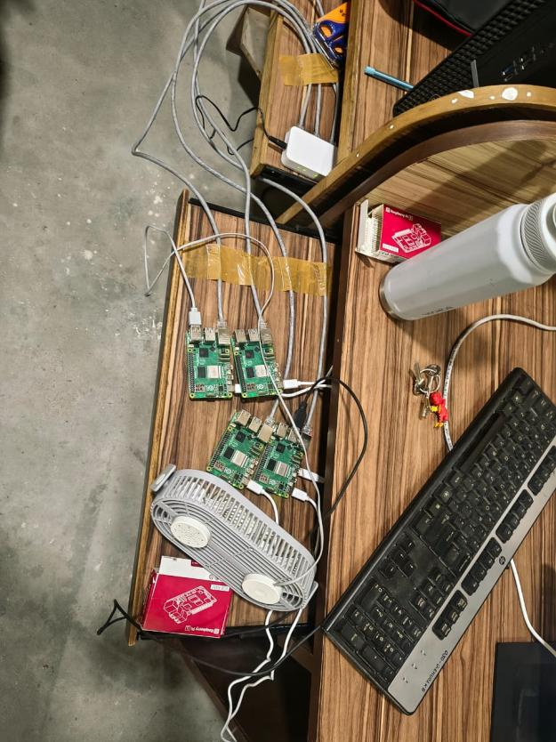
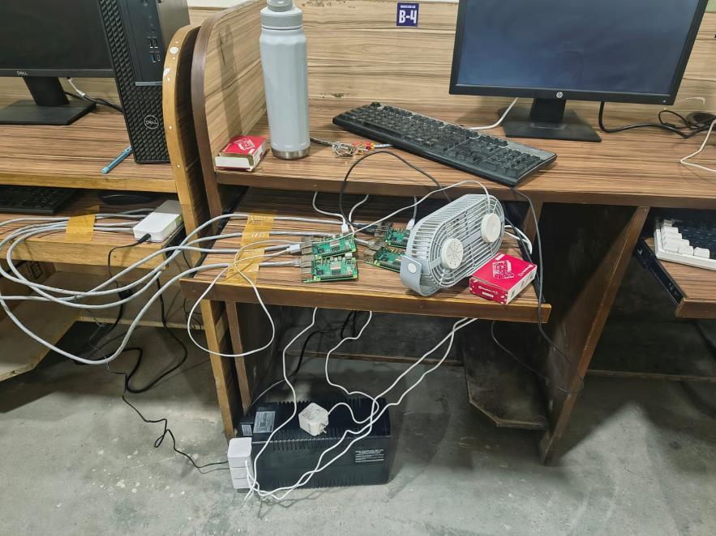

<!doctype html>
<html lang="en" class="scroll-smooth">
<head>
<meta charset="UTF-8" />
<meta name="viewport" content="width=device-width, initial-scale=1.0" />
<meta name="theme-color" content="#05070D" />
<title>Team Wolfs · Blockchain-Verified Multi-LLM Orchestration on Distributed SBC Clusters</title>
<meta name="description" content="A Blockchain-Verified Dynamic Controller for Multi-LLM Orchestration on Distributed Compute Clusters — Major Project Progress Report 1, Team Wolfs (CSE27-266), Graphic Era Hill University." />

<!-- Google Fonts -->
<link rel="preconnect" href="https://fonts.googleapis.com" />
<link rel="preconnect" href="https://fonts.gstatic.com" crossorigin />
<link href="https://fonts.googleapis.com/css2?family=Space+Grotesk:wght@400;500;600;700&family=Inter:wght@300;400;500;600;700&family=JetBrains+Mono:wght@400;500;600;700&display=swap" rel="stylesheet" />

<!-- Tailwind CSS -->
<script src="https://cdn.tailwindcss.com?plugins=forms"></script>
<script>
tailwind.config = {
  theme: {
    extend: {
      colors: {
        void: '#05070D',
        primary: '#0A0E1A',
        secondary: '#111827',
        elevated: '#1A2332',
        orange: { DEFAULT: '#FF6B35', soft: '#FF8A5C', glow: 'rgba(255, 107, 53, 0.4)' },
        amber: '#F59E0B',
        cyan: { DEFAULT: '#22D3EE', glow: 'rgba(34, 211, 238, 0.35)' },
        purple: { DEFAULT: '#8B5CF6', glow: 'rgba(139, 92, 246, 0.35)' },
        emerald: '#10B981',
        rose: '#F43F5E',
      },
      fontFamily: {
        display: ['"Space Grotesk"', 'system-ui', 'sans-serif'],
        body: ['Inter', 'system-ui', 'sans-serif'],
        mono: ['"JetBrains Mono"', 'ui-monospace', 'monospace'],
      },
      boxShadow: {
        'glow-orange': '0 20px 60px -15px rgba(255,107,53,0.4)',
        'glow-cyan': '0 20px 60px -15px rgba(34,211,238,0.35)',
        'glow-purple': '0 20px 60px -15px rgba(139,92,246,0.35)',
        'glow-emerald': '0 20px 60px -15px rgba(16,185,129,0.35)',
        'glow-rose': '0 20px 60px -15px rgba(244,63,94,0.4)',
      },
    },
  },
}
</script>

<style>
  * { -webkit-font-smoothing: antialiased; box-sizing: border-box; }
  html, body, #root { background: #05070D; color: #F8FAFC; margin: 0; min-height: 100vh; }
  body {
    font-family: 'Inter', system-ui, sans-serif;
    overflow-x: hidden;
  }
  ::selection { background: rgba(255,107,53,0.4); color: #fff; }

  ::-webkit-scrollbar { width: 8px; height: 8px; }
  ::-webkit-scrollbar-track { background: #0A0E1A; }
  ::-webkit-scrollbar-thumb {
    background: linear-gradient(180deg, #FF6B35, #22D3EE);
    border-radius: 9999px;
  }

  .font-display { font-family: 'Space Grotesk', system-ui, sans-serif; }
  .font-mono { font-family: 'JetBrains Mono', ui-monospace, monospace; }

  .text-eyebrow {
    font-family: 'Inter', sans-serif;
    font-weight: 600; font-size: 0.75rem;
    text-transform: uppercase; letter-spacing: 0.18em;
    color: #FF6B35;
  }
  .glass {
    background: rgba(255,255,255,0.035);
    backdrop-filter: blur(16px);
    border: 1px solid rgba(255,255,255,0.08);
  }
  .card-surface {
    background: linear-gradient(180deg, rgba(26,35,50,0.78), rgba(17,24,39,0.70));
    border: 1px solid rgba(255,255,255,0.08);
    border-radius: 20px;
    backdrop-filter: blur(12px);
  }
  .card-surface-elevated {
    background: linear-gradient(180deg, rgba(34,46,66,0.85), rgba(21,30,47,0.75));
    border: 1px solid rgba(255,255,255,0.12);
    border-radius: 20px;
  }
  .gradient-text {
    background: linear-gradient(90deg, #FF6B35, #F59E0B, #22D3EE);
    -webkit-background-clip: text; background-clip: text; color: transparent;
  }
  .gradient-text-purple {
    background: linear-gradient(135deg, #8B5CF6, #22D3EE);
    -webkit-background-clip: text; background-clip: text; color: transparent;
  }
  .gradient-text-emerald {
    background: linear-gradient(135deg, #10B981, #22D3EE);
    -webkit-background-clip: text; background-clip: text; color: transparent;
  }
  .scanline { position: relative; }
  .scanline::after {
    content: ''; position: absolute; inset: 0;
    background: repeating-linear-gradient(0deg,
      rgba(255,255,255,0.02) 0px, rgba(255,255,255,0.02) 1px,
      transparent 1px, transparent 4px);
    pointer-events: none; border-radius: inherit;
  }
  @keyframes meshMove {
    0%,100% { transform: translate(0,0) scale(1); }
    33% { transform: translate(4%,-3%) scale(1.05); }
    66% { transform: translate(-3%,4%) scale(0.98); }
  }
  @keyframes floatPulse {
    0%,100% { transform: translateY(0px); }
    50% { transform: translateY(-8px); }
  }
  @keyframes soundBar {
    0%, 100% { height: 4px; }
    50% { height: 18px; }
  }
  .animate-mesh-slow { animation: meshMove 60s ease-in-out infinite; }
  .animate-float { animation: floatPulse 6s ease-in-out infinite; }

  .sound-bar {
    width: 3px;
    background: #FF6B35;
    border-radius: 2px;
    animation: soundBar 1.2s ease-in-out infinite;
  }
  .sound-bar:nth-child(2) { animation-delay: 0.2s; background: #22D3EE; }
  .sound-bar:nth-child(3) { animation-delay: 0.4s; background: #8B5CF6; }
  .sound-bar:nth-child(4) { animation-delay: 0.1s; background: #10B981; }

  :focus-visible {
    outline: 2px solid #FF6B35;
    outline-offset: 3px; border-radius: 6px;
  }
  input[type="range"] { accent-color: #FF6B35; }
</style>
</head>

<body>
  <div id="root"></div>

  <!-- Import map for CDN modules -->
  <script type="importmap">
  {
    "imports": {
      "react": "https://esm.sh/react@18.3.1",
      "react-dom": "https://esm.sh/react-dom@18.3.1",
      "react-dom/client": "https://esm.sh/react-dom@18.3.1/client",
      "framer-motion": "https://esm.sh/framer-motion@11.3.0?deps=react@18.3.1,react-dom@18.3.1",
      "lucide-react": "https://esm.sh/lucide-react@0.408.0?deps=react@18.3.1",
      "recharts": "https://esm.sh/recharts@2.12.7?deps=react@18.3.1,react-dom@18.3.1"
    }
  }
  </script>

  <!-- Babel Standalone for in-browser JSX parsing -->
  <script src="https://unpkg.com/@babel/standalone@7.24.7/babel.min.js"></script>

  <script type="text/babel" data-type="module" data-presets="react">
    import React, { useState, useEffect, useRef, useMemo, useCallback } from 'react'
    import { createRoot } from 'react-dom/client'
    import { motion, AnimatePresence, useScroll, useSpring, useInView } from 'framer-motion'
    import {
      ArrowRight, ArrowLeft, ArrowDown, Check, X, Minus, HelpCircle, ScanSearch, Pencil,
      FileWarning, Route, Cpu, ShieldAlert, FileX, Network, Zap, Brain, GitBranch,
      ShieldCheck, LayoutDashboard, Users, TrendingUp, AlertTriangle, RotateCcw,
      Clock, FileSearch, Volume2, VolumeX, BookOpen, Layers, Terminal, CheckCircle2,
      ChevronRight, Copy, Search, Play, Pause, Activity, Thermometer, Flame, Send,
      Sparkles, Music, Sliders, RefreshCw, Repeat, Radio, Gauge, HardDrive
    } from 'lucide-react'
    import {
      BarChart, Bar, XAxis, YAxis, ResponsiveContainer, Tooltip, CartesianGrid, Cell
    } from 'recharts'

    /* ============================================================
       AUDIO FX SYNTHESIZER (Pure Web Audio API - Zero Assets)
       ============================================================ */
    class SoundEngine {
      constructor() {
        this.ctx = null
        this.enabled = true
      }
      init() {
        if (!this.ctx && typeof window !== 'undefined') {
          const AudioContext = window.AudioContext || window.webkitAudioContext
          if (AudioContext) {
            this.ctx = new AudioContext()
          }
        }
        if (this.ctx && this.ctx.state === 'suspended') {
          this.ctx.resume()
        }
      }
      playClick() {
        if (!this.enabled) return
        this.init()
        if (!this.ctx) return
        const osc = this.ctx.createOscillator()
        const gain = this.ctx.createGain()
        osc.type = 'sine'
        osc.frequency.setValueAtTime(880, this.ctx.currentTime)
        osc.frequency.exponentialRampToValueAtTime(440, this.ctx.currentTime + 0.05)
        gain.gain.setValueAtTime(0.04, this.ctx.currentTime)
        gain.gain.exponentialRampToValueAtTime(0.001, this.ctx.currentTime + 0.05)
        osc.connect(gain); gain.connect(this.ctx.destination)
        osc.start(); osc.stop(this.ctx.currentTime + 0.05)
      }
      playTamper() {
        if (!this.enabled) return
        this.init()
        if (!this.ctx) return
        const now = this.ctx.currentTime
        const osc = this.ctx.createOscillator()
        const gain = this.ctx.createGain()
        osc.type = 'sawtooth'
        osc.frequency.setValueAtTime(140, now)
        osc.frequency.linearRampToValueAtTime(70, now + 0.25)
        gain.gain.setValueAtTime(0.12, now)
        gain.gain.exponentialRampToValueAtTime(0.001, now + 0.25)
        osc.connect(gain); gain.connect(this.ctx.destination)
        osc.start(); osc.stop(now + 0.25)
      }
      playRestore() {
        if (!this.enabled) return
        this.init()
        if (!this.ctx) return
        const now = this.ctx.currentTime
        const freqs = [523.25, 659.25, 783.99, 1046.50]
        freqs.forEach((f, i) => {
          const osc = this.ctx.createOscillator()
          const gain = this.ctx.createGain()
          osc.type = 'sine'
          osc.frequency.setValueAtTime(f, now + i * 0.05)
          gain.gain.setValueAtTime(0.05, now + i * 0.05)
          gain.gain.exponentialRampToValueAtTime(0.001, now + i * 0.05 + 0.15)
          osc.connect(gain); gain.connect(this.ctx.destination)
          osc.start(now + i * 0.05); osc.stop(now + i * 0.05 + 0.15)
        })
      }
      playPacket() {
        if (!this.enabled) return
        this.init()
        if (!this.ctx) return
        const now = this.ctx.currentTime
        const osc = this.ctx.createOscillator()
        const gain = this.ctx.createGain()
        osc.type = 'triangle'
        osc.frequency.setValueAtTime(1200, now)
        osc.frequency.exponentialRampToValueAtTime(2400, now + 0.08)
        gain.gain.setValueAtTime(0.03, now)
        gain.gain.exponentialRampToValueAtTime(0.001, now + 0.08)
        osc.connect(gain); gain.connect(this.ctx.destination)
        osc.start(now); osc.stop(now + 0.08)
      }
    }
    const audio = new SoundEngine()

    /* ============================================================
       PROJECT DATA & REFERENCES
       ============================================================ */
    const TEAM = {
      title: 'A Blockchain-Verified Dynamic Controller for Multi-LLM Orchestration on Distributed Compute Clusters',
      shortTitle: 'Blockchain-Verified Multi-LLM Orchestration',
      teamName: 'Team Wolfs',
      teamId: 'CSE27-266',
      reportLabel: 'MAJOR PROJECT · PROGRESS REPORT 1 · OCTOBER 2026',
      authors: [
        { name: 'Saksham Godiyal', roll: '2319484', section: 'E2', email: 'saksham@gehu.ac.in' },
        { name: 'Anubhav Semwal', roll: '2318445', section: 'E2', email: 'anubhav@gehu.ac.in' },
      ],
      guide: 'Ms. Manika Manwal',
      guideTitle: 'Assistant Professor, Department of CSE',
      institution: 'Graphic Era Hill University, Dehradun, Uttarakhand',
      date: 'October 2026',
      coreThesis: 'A load-aware multi-model controller on single-board computers (Raspberry Pi 5 cluster) that produces a tamper-evident, blockchain-style hash-chained record of every routing and arbitration decision, at low enough overhead to remain usable.',
      researchQuestion: 'Can a load-aware multi-model controller on single-board computers produce a tamper-evident record of every routing and arbitration decision at a low enough overhead?',
    }

    const THEME_DATA = [
      { theme: 'Routing, MoE & ensembling', count: 8, color: '#FF6B35' },
      { theme: 'Edge & distributed LLM inference', count: 7, color: '#22D3EE' },
      { theme: 'SBC clusters & MPI', count: 3, color: '#8B5CF6' },
      { theme: 'Ledgers & consensus', count: 3, color: '#F59E0B' },
      { theme: 'Verification of inference', count: 3, color: '#10B981' },
      { theme: 'Documentation-based transparency', count: 2, color: '#F43F5E' },
      { theme: 'Tamper-evident logging', count: 2, color: '#94A3B8' },
    ]

    const PERIOD_DATA = [
      { period: '1999–2009', count: 4 },
      { period: '2010–2019', count: 5 },
      { period: '2020–2022', count: 3 },
      { period: '2023', count: 4 },
      { period: '2024', count: 7 },
      { period: '2025', count: 4 },
      { period: 'ongoing', count: 1 },
    ]

    const REP_WORKS = [
      { id: 4, name: 'RouteLLM', authors: 'Ong et al. (2024)', summary: 'Learns to route queries between strong/weak LLMs using preference data. Cost-driven; no load or latency signals, no auditable record.' },
      { id: 5, name: 'FrugalGPT', authors: 'Chen et al. (2024)', summary: 'Cascades models, stops at first trusted answer. Built on commercial APIs; no decision path record.' },
      { id: 7, name: 'Mixture-of-Agents', authors: 'Wang et al. (2025)', summary: 'Layers models where each layer aggregates outputs. Sequential calls blow up latency; no individual model accountability.' },
      { id: 10, name: 'Nguyen et al.', authors: 'Nguyen et al. (2025)', summary: 'Benchmarks 25 quantized LLMs on SBC boards. Establishes ~1.5B param ceiling for edge inference; single-device only.' },
      { id: 25, name: 'zkLLM', authors: 'Sun et al. (ACM CCS 2024)', summary: 'Zero-knowledge proofs of LLM inference. Requires 15 min on server GPUs for 13B model; impossible on SBCs; verifies execution, not routing.' },
      { id: 23, name: 'opML', authors: 'Conway et al. (2024)', summary: 'Optimistic fraud proofs on blockchain for PC inference. Needs dispute window (days/hours), staking, and full blockchain infrastructure.' },
      { id: 26, name: 'Crosby & Wallach', authors: 'Crosby & Wallach (2009)', summary: 'Merkle-tree tamper-evident logging. Generic server logs; never measured in AI routing request paths.' },
    ]

    const ALL_REFERENCES = [
      { id: 1, authors: 'N. Shazeer et al.', year: 2017, title: 'Outrageously large neural networks: The sparsely-gated mixture-of-experts layer', venue: 'Proc. ICLR, arXiv:1701.06538', theme: 'Routing, MoE & ensembling', note: 'Sparsely-gated MoE. Routing internal to model; no outside inspectable record.' },
      { id: 2, authors: 'W. Fedus, B. Zoph, and N. Shazeer', year: 2022, title: 'Switch transformers: Scaling to trillion parameter models with simple and efficient sparsity', venue: 'J. Mach. Learn. Res., vol. 23, pp. 1–39', theme: 'Routing, MoE & ensembling', note: 'Top-1 routing inside T5 Transformer. Assumes massive GPU clusters, no audit trail.' },
      { id: 3, authors: 'A. Q. Jiang et al.', year: 2024, title: 'Mixtral of experts', venue: 'arXiv:2401.04088', theme: 'Routing, MoE & ensembling', note: 'Sparse MoE decoder (2 of 8 experts per token). 47B parameters exceeds SBC memory.' },
      { id: 4, authors: 'I. Ong et al.', year: 2024, title: 'RouteLLM: Learning to route LLMs with preference data', venue: 'arXiv:2406.18665', theme: 'Routing, MoE & ensembling', note: 'Learns to route queries between strong and weak models. No load/latency signal; no audit trail.' },
      { id: 5, authors: 'L. Chen, M. Zaharia, and J. Zou', year: 2024, title: 'FrugalGPT: How to use large language models while reducing cost and improving performance', venue: 'Trans. Mach. Learn. Res.', theme: 'Routing, MoE & ensembling', note: 'Cascades API calls. Relies on commercial cloud APIs; no verifiable decision history.' },
      { id: 6, authors: 'D. Jiang, X. Ren, and B. Y. Lin', year: 2023, title: 'LLM-Blender: Ensembling large language models with pairwise ranking and generative fusion', venue: 'Proc. 61st ACL, doi: 10.18653/v1/2023.acl-long.792', theme: 'Routing, MoE & ensembling', note: 'Pairs and fuses candidate answers. High compute cost; no edge deployment.' },
      { id: 7, authors: 'J. Wang, J. Wang, B. Athiwaratkun, C. Zhang, and J. Zou', year: 2025, title: 'Mixture-of-agents enhances large language model capabilities', venue: 'Proc. ICLR, arXiv:2406.04692', theme: 'Routing, MoE & ensembling', note: 'Multi-layer agent architecture. Sequential latency explosion; lacks tamper-evident records.' },
      { id: 8, authors: 'Q. J. Hu et al.', year: 2024, title: 'RouterBench: A benchmark for multi-LLM routing system', venue: 'arXiv:2403.12031', theme: 'Routing, MoE & ensembling', note: 'Standard benchmark across cost-accuracy trade-offs for multi-LLM systems.' },
      { id: 9, authors: 'Z. Nezami et al.', year: 2025, title: 'Generative AI on the edge: Architecture and performance evaluation', venue: 'Proc. IEEE ICC, arXiv:2411.17712', theme: 'Edge & distributed LLM inference', note: 'Evaluates edge generative AI. Single model focus; no multi-model orchestration.' },
      { id: 10, authors: 'T. Nguyen et al.', year: 2025, title: 'An evaluation of LLMs inference on popular single-board computers', venue: 'arXiv:2511.07425', theme: 'Edge & distributed LLM inference', note: 'Benchmarks 25 quantized LLMs on SBCs. Establishes ~1.5B param ceiling for edge CPU inference.' },
      { id: 11, authors: 'M. Zhang et al.', year: 2024, title: 'EdgeShard: Efficient LLM inference via collaborative edge computing', venue: 'arXiv:2405.14371', theme: 'Edge & distributed LLM inference', note: 'Splits one model into shards distributed over edge devices. No model arbitration.' },
      { id: 12, authors: 'A. Borzunov et al.', year: 2023, title: 'Petals: Collaborative inference and fine-tuning of large models', venue: 'Proc. 61st ACL, arXiv:2209.01188', theme: 'Edge & distributed LLM inference', note: 'Decentralized P2P serving of 100B+ models. Assumes internet-scale volunteer nodes.' },
      { id: 13, authors: 'b4rtaz', year: 2024, title: 'Distributed Llama', venue: 'GitHub repository: github.com/b4rtaz/distributed-llama', theme: 'Edge & distributed LLM inference', note: 'Tensor-parallel LLM execution over sockets. Splits a single model across CPUs.' },
      { id: 14, authors: 'E. Frantar, S. Ashkboos, T. Hoefler, and D. Alistarh', year: 2023, title: 'GPTQ: Accurate post-training quantization for generative pre-trained transformers', venue: 'Proc. ICLR, arXiv:2210.17323', theme: 'Edge & distributed LLM inference', note: 'One-shot 4-bit weight quantization enabling edge CPU execution.' },
      { id: 15, authors: 'W. Kwon et al.', year: 2023, title: 'Efficient memory management for large language model serving with PagedAttention', venue: 'Proc. 29th SOSP', theme: 'Edge & distributed LLM inference', note: 'PagedAttention foundation for modern high-throughput serving runtimes.' },
      { id: 16, authors: 'S. J. Cox et al.', year: 2014, title: 'Iridis-pi: A low-cost, compact demonstration cluster', venue: 'Cluster Comput., vol. 17, no. 2, pp. 349–358', theme: 'SBC clusters & MPI', note: '64-node Raspberry Pi 1 cluster proving SBC viability for MPI workloads.' },
      { id: 17, authors: 'S. J. Johnston et al.', year: 2018, title: 'Commodity single board computer clusters and their applications', venue: 'Future Gener. Comput. Syst., vol. 89, pp. 201–212', theme: 'SBC clusters & MPI', note: 'Comprehensive review of SBC clusters in research; thermal and network limits.' },
      { id: 18, authors: 'L. Dalcin, R. Paz, and M. Storti', year: 2005, title: 'MPI for Python', venue: 'J. Parallel Distrib. Comput., vol. 65, no. 9, pp. 1108–1115', theme: 'SBC clusters & MPI', note: 'mpi4py binding standard enabling high-level MPI in Python workflows.' },
      { id: 19, authors: 'M. Mitchell et al.', year: 2019, title: 'Model cards for model reporting', venue: 'Proc. ACM FAT*, pp. 220–229', theme: 'Documentation-based transparency', note: 'Proposes human-written model documentation. Static; no runtime query trail.' },
      { id: 20, authors: 'G. Mollett, F. Cano Gabarda, R. Zhukov, H. Sidhpurwala, and E. Fox', year: 2025, title: 'Blueprints of trust: AI system cards for end-to-end transparency and governance', venue: 'arXiv:2509.20394', theme: 'Documentation-based transparency', note: 'Holistic system cards. Human-maintained governance; cannot verify runtime integrity.' },
      { id: 21, authors: 'E. Androulaki et al.', year: 2018, title: 'Hyperledger Fabric: A distributed operating system for permissioned blockchains', venue: 'Proc. 13th EuroSys, Art. no. 30', theme: 'Ledgers & consensus', note: 'Modular permissioned blockchain. Heavy container footprint evaluated as stretch goal.' },
      { id: 22, authors: 'X. Xu, Z. Zeng, S. Yang, and H. Shao', year: 2020, title: 'A novel blockchain framework for industrial IoT edge computing', venue: 'Sensors, vol. 20, no. 7, p. 2061', theme: 'Ledgers & consensus', note: 'Lightweight edge blockchain tested on generic sensor data in simulation.' },
      { id: 23, authors: 'K. D. Conway, C. So, X. Yu, and K. Wong', year: 2024, title: 'opML: Optimistic machine learning on blockchain', venue: 'arXiv:2401.17555', theme: 'Verification of inference', note: 'Optimistic fraud proofs on blockchain for PC inference. Needs dispute window and staking.' },
      { id: 24, authors: 'D. Kang, T. Hashimoto, I. Stoica, and Y. Sun', year: 2022, title: 'Scaling up trustless DNN inference with zero-knowledge proofs', venue: 'arXiv:2210.08674', theme: 'Verification of inference', note: 'zk-SNARKs for DNN inference verification. Computationally prohibitive on SBC hardware.' },
      { id: 25, authors: 'H. Sun, J. Li, and H. Zhang', year: 2024, title: 'zkLLM: Zero knowledge proofs for large language models', venue: 'Proc. ACM CCS 2024, arXiv:2404.16109', theme: 'Verification of inference', note: 'ZK proofs for LLMs. Takes ~15 minutes on server GPUs for 13B model; infeasible on SBCs.' },
      { id: 26, authors: 'S. A. Crosby and D. S. Wallach', year: 2009, title: 'Efficient data structures for tamper-evident logging', venue: 'Proc. 18th USENIX Security, pp. 317–334', theme: 'Tamper-evident logging', note: 'History trees and hash-chained logs. Lightweight, but requires outside witness.' },
      { id: 27, authors: 'B. Schneier and J. Kelsey', year: 1999, title: 'Secure audit logs to support computer forensics', venue: 'ACM Trans. Inf. Syst. Secur., vol. 2, pp. 159–176', theme: 'Tamper-evident logging', note: 'Forward-secure cryptographically chained logs preventing post-compromise log tampering.' },
      { id: 28, authors: 'M. Castro and B. Liskov', year: 1999, title: 'Practical Byzantine fault tolerance', venue: 'Proc. 3rd OSDI, pp. 173–186', theme: 'Ledgers & consensus', note: 'PBFT consensus tolerating (n-1)/3 faulty nodes; 4 nodes tolerate 1 faulty node.' },
    ]

    const HARDWARE_STACK = [
      { component: 'Raspberry Pi 5 (Coordinator)', specs: 'Broadcom BCM2712 quad-core Cortex-A76 @ 2.4 GHz, 8 GB LPDDR4X RAM', role: 'MPI Rank 0, runs Dynamic Load Controller, arbitration and blockchain signing.' },
      { component: 'Raspberry Pi 5 (Workers 1, 2, 3)', specs: '3× Broadcom BCM2712 quad-core Cortex-A76, 8 GB RAM each', role: 'MPI Ranks 1, 2, 3. Each node hosts a dedicated quantized LLM (~1.5B parameters).' },
      { component: 'NVIDIA Jetson Nano', specs: '128-core Maxwell GPU, Quad-core ARM A57 @ 1.43 GHz, 4 GB 64-bit LPDDR4', role: 'Heterogeneous GPU worker attached via custom socket listener for GPU-accelerated tasks.' },
      { component: 'Network & Interconnect', specs: 'Gigabit Ethernet Switch (8-port unmanaged) + Cat6 STP cabling', role: 'Low-latency inter-node communication for MPI messages and telemetry heartbeat.' },
      { component: 'Storage & Power', specs: 'High-end SanDisk Extreme A2 microSD cards + Official 27W USB-C PD power supplies', role: 'Storage for OS, quantised model weights (GGUF), and the append-only ledger log.' },
      { component: 'Rack & Thermal Cooling', specs: 'Custom 4-layer acrylic stack with active 40mm PWM cooling fans & aluminium heatsinks', role: 'Prevents thermal throttling during continuous concurrent multi-model inference.' },
    ]

    const SOFTWARE_STACK = [
      { area: 'Cluster & Parallelism', tools: 'OpenMPI 4.1.x, mpi4py 3.1.x, OpenMP', details: 'Scatters inference jobs, gathers candidate answers, maintains intra-node multicore parallelism.' },
      { area: 'Model Serving Runtime', tools: 'llama.cpp, Ollama, GGUF Quantization (Q4_K_M)', details: 'Executes ~1.5B parameter models (e.g., Llama-3.2-1B, Qwen2.5-1.5B, SmolLM) with CPU SIMD NEON.' },
      { area: 'Dynamic Controller', tools: 'Python 3.11+, FastAPI, asyncio socket server', details: 'Calculates real-time α/β/γ routing score over live node CPU/RAM telemetry, latency, and tags.' },
      { area: 'Verification & Ledger', tools: 'Custom SHA-256 Hash-Chaining + Ed25519 Signatures', details: 'Writes tamper-evident block into append-only file before returning response; outside witness sync.' },
      { area: 'Stretch Goal Ledger', tools: 'Hyperledger Fabric 2.5 / PBFT', details: 'Permissioned enterprise ledger with Byzantine fault tolerance evaluated for future Phase 4.' },
      { area: 'Monitoring Dashboard', tools: 'React, Tailwind CSS, Recharts, Server-Sent Events (SSE)', details: 'Displays live node loads, real-time routing trails, consensus stats, and ledger integrity.' },
    ]

    const SECTIONS = [
      { id: 'hero', label: 'Cover' },
      { id: 'problem', label: 'The Problem' },
      { id: 'question', label: 'Research Question' },
      { id: 'prior', label: 'Prior Work' },
      { id: 'cluster', label: 'MPI Foundation' },
      { id: 'objectives', label: 'Objectives & Scope' },
      { id: 'architecture', label: 'System Architecture' },
      { id: 'lifecycle', label: 'Request Lifecycle' },
      { id: 'routing', label: 'Routing Engine' },
      { id: 'arbitration', label: 'Arbitration Policies' },
      { id: 'ledger', label: 'Blockchain Ledger' },
      { id: 'survey', label: 'Literature Survey' },
      { id: 'gap', label: 'Research Gap' },
      { id: 'contributions', label: 'Contributions' },
      { id: 'evaluation', label: 'Evaluation Plan' },
      { id: 'roadmap', label: 'Roadmap & Progress' },
      { id: 'risks', label: 'Risks & Mitigation' },
      { id: 'close', label: 'Conclusion' },
    ]

    /* ============================================================
       BACKGROUND 3D PARTICLE FIELD CANVAS
       ============================================================ */
    function InteractiveParticleCanvas() {
      const canvasRef = useRef(null)
      useEffect(() => {
        const canvas = canvasRef.current
        if (!canvas) return
        const ctx = canvas.getContext('2d')
        let width = canvas.width = window.innerWidth
        let height = canvas.height = window.innerHeight

        const onResize = () => {
          width = canvas.width = window.innerWidth
          height = canvas.height = window.innerHeight
        }
        window.addEventListener('resize', onResize)

        const count = Math.min(65, Math.floor((width * height) / 22000))
        const particles = Array.from({ length: count }, () => ({
          x: Math.random() * width,
          y: Math.random() * height,
          vx: (Math.random() - 0.5) * 0.45,
          vy: (Math.random() - 0.5) * 0.45,
          radius: Math.random() * 1.8 + 0.8,
          color: Math.random() > 0.6 ? '#FF6B35' : Math.random() > 0.3 ? '#22D3EE' : '#8B5CF6',
        }))

        let mouse = { x: -1000, y: -1000 }
        const onMouseMove = (e) => {
          mouse.x = e.clientX
          mouse.y = e.clientY
        }
        window.addEventListener('mousemove', onMouseMove)

        let raf = 0
        const animate = () => {
          ctx.clearRect(0, 0, width, height)

          // Draw links
          for (let i = 0; i < particles.length; i++) {
            for (let j = i + 1; j < particles.length; j++) {
              const dx = particles[i].x - particles[j].x
              const dy = particles[i].y - particles[j].y
              const dist = Math.sqrt(dx * dx + dy * dy)
              if (dist < 130) {
                const alphaVal = (1 - dist / 130) * 0.16
                ctx.strokeStyle = `rgba(148, 163, 184, ${alphaVal})`
                ctx.lineWidth = 0.8
                ctx.beginPath()
                ctx.moveTo(particles[i].x, particles[i].y)
                ctx.lineTo(particles[j].x, particles[j].y)
                ctx.stroke()
              }
            }
          }

          // Update & draw particles
          particles.forEach(p => {
            p.x += p.vx
            p.y += p.vy
            if (p.x < 0 || p.x > width) p.vx *= -1
            if (p.y < 0 || p.y > height) p.vy *= -1

            // Cursor parallax
            const dx = p.x - mouse.x
            const dy = p.y - mouse.y
            const mDist = Math.sqrt(dx * dx + dy * dy)
            if (mDist < 140) {
              const force = (1 - mDist / 140) * 1.2
              p.x += (dx / mDist) * force
              p.y += (dy / mDist) * force
            }

            ctx.beginPath()
            ctx.arc(p.x, p.y, p.radius, 0, Math.PI * 2)
            ctx.fillStyle = p.color
            ctx.globalAlpha = 0.55
            ctx.fill()
            ctx.globalAlpha = 1.0
          })

          raf = requestAnimationFrame(animate)
        }
        raf = requestAnimationFrame(animate)

        return () => {
          window.removeEventListener('resize', onResize)
          window.removeEventListener('mousemove', onMouseMove)
          cancelAnimationFrame(raf)
        }
      }, [])

      return <canvas ref={canvasRef} className="pointer-events-none fixed inset-0 z-0 opacity-80" />
    }

    /* ============================================================
       ENHANCED 3D CLUSTER CANVAS WITH PRESET CAMERAS & HIGHLIGHT
       ============================================================ */
    function Cluster3DCanvas({ activeNodeId, onSelectNode, cameraView, autoOrbit }) {
      const canvasRef = useRef(null)
      const stateRef = useRef({ rotY: 0, rotX: 0.2, targetRotY: 0, targetRotX: 0.2, autoOrbit: true })

      useEffect(() => {
        stateRef.current.autoOrbit = autoOrbit
      }, [autoOrbit])

      useEffect(() => {
        if (cameraView === 'isometric') {
          stateRef.current.targetRotX = 0.25
          stateRef.current.targetRotY = 0.5
        } else if (cameraView === 'top') {
          stateRef.current.targetRotX = 1.3
          stateRef.current.targetRotY = 0
        } else if (cameraView === 'front') {
          stateRef.current.targetRotX = 0.05
          stateRef.current.targetRotY = 0
        }
      }, [cameraView])

      useEffect(() => {
        const canvas = canvasRef.current
        if (!canvas) return
        const ctx = canvas.getContext('2d')
        let w = canvas.width = canvas.parentElement.clientWidth
        let h = canvas.height = canvas.parentElement.clientHeight

        const onResize = () => {
          if (!canvas.parentElement) return
          w = canvas.width = canvas.parentElement.clientWidth
          h = canvas.height = canvas.parentElement.clientHeight
        }
        window.addEventListener('resize', onResize)

        const nodes = [
          { id: 'coord', label: 'Coordinator (RPi 5)', role: 'Dynamic Controller', x: 0, y: -90, z: 0, color: '#FF6B35', size: 14 },
          { id: 'w1', label: 'Worker 1 (RPi 5)', role: 'Llama-3.2 (Factual)', x: -110, y: 70, z: -60, color: '#22D3EE', size: 11 },
          { id: 'w2', label: 'Worker 2 (RPi 5)', role: 'Qwen-2.5 (Reasoning)', x: 110, y: 70, z: -60, color: '#22D3EE', size: 11 },
          { id: 'w3', label: 'Worker 3 (RPi 5)', role: 'SmolLM (Code)', x: 0, y: 80, z: 100, color: '#22D3EE', size: 11 },
          { id: 'gpu', label: 'Jetson Nano (GPU)', role: 'Socket Job Listener', x: 150, y: -20, z: 50, color: '#8B5CF6', size: 12, isDashed: true },
        ]

        const edges = [
          { from: 0, to: 1, label: 'MPI_Scatter / Gather' },
          { from: 0, to: 2, label: 'MPI_Scatter / Gather' },
          { from: 0, to: 3, label: 'MPI_Scatter / Gather' },
          { from: 0, to: 4, label: 'TCP Socket Protocol', dashed: true },
        ]

        const packets = [
          { edge: 0, progress: 0.1, speed: 0.007, dir: 1, color: '#FF6B35' },
          { edge: 1, progress: 0.4, speed: 0.008, dir: 1, color: '#22D3EE' },
          { edge: 2, progress: 0.7, speed: 0.006, dir: 1, color: '#22D3EE' },
          { edge: 3, progress: 0.2, speed: 0.005, dir: 1, color: '#8B5CF6' },
          { edge: 0, progress: 0.8, speed: 0.006, dir: -1, color: '#10B981' },
          { edge: 2, progress: 0.9, speed: 0.007, dir: -1, color: '#10B981' },
        ]

        const blocks = Array.from({ length: 6 }, () => ({
          x: (Math.random() - 0.5) * 260,
          y: 120 + Math.random() * 80,
          z: (Math.random() - 0.5) * 200,
          hash: '0x' + Math.floor(Math.random() * 0xffffff).toString(16).padStart(6, '0'),
          vy: 0.35 + Math.random() * 0.25,
          rot: Math.random() * Math.PI,
        }))

        let isDragging = false
        let lastMouse = { x: 0, y: 0 }

        const onMouseDown = e => {
          isDragging = true
          lastMouse = { x: e.clientX, y: e.clientY }
        }
        const onMouseMove = e => {
          if (!isDragging) return
          const dx = e.clientX - lastMouse.x
          const dy = e.clientY - lastMouse.y
          stateRef.current.targetRotY += dx * 0.01
          stateRef.current.targetRotX += dy * 0.01
          lastMouse = { x: e.clientX, y: e.clientY }
        }
        const onMouseUp = () => { isDragging = false }

        // Click detection for nodes
        const onClickCanvas = e => {
          const rect = canvas.getBoundingClientRect()
          const mx = e.clientX - rect.left
          const my = e.clientY - rect.top
          // check distance to projected nodes
          nodes.forEach(n => {
            const p = project(n.x, n.y, n.z)
            const dist = Math.hypot(p.x - mx, p.y - my)
            if (dist < (n.size + 14) * p.scale) {
              audio.playClick()
              if (onSelectNode) onSelectNode(n.id)
            }
          })
        }

        canvas.addEventListener('mousedown', onMouseDown)
        window.addEventListener('mousemove', onMouseMove)
        window.addEventListener('mouseup', onMouseUp)
        canvas.addEventListener('click', onClickCanvas)

        const project = (x, y, z) => {
          const cosY = Math.cos(stateRef.current.rotY), sinY = Math.sin(stateRef.current.rotY)
          const x1 = x * cosY - z * sinY
          const z1 = z * cosY + x * sinY
          const cosX = Math.cos(stateRef.current.rotX), sinX = Math.sin(stateRef.current.rotX)
          const y2 = y * cosX - z1 * sinX
          const z2 = z1 * cosX + y * sinX
          const d = 420
          const scale = d / (d + z2)
          return {
            x: w / 2 + x1 * scale,
            y: h / 2 + y2 * scale,
            scale,
            z: z2
          }
        }

        let raf = 0
        const render = () => {
          ctx.clearRect(0, 0, w, h)
          if (stateRef.current.autoOrbit) {
            stateRef.current.targetRotY += 0.0025
          }
          stateRef.current.rotY += (stateRef.current.targetRotY - stateRef.current.rotY) * 0.06
          stateRef.current.rotX += (stateRef.current.targetRotX - stateRef.current.rotX) * 0.06

          // Render Floating Hash Blocks
          blocks.forEach(b => {
            b.y -= b.vy
            if (b.y < -140) b.y = 130
            const p = project(b.x, b.y, b.z)
            ctx.save()
            ctx.fillStyle = 'rgba(34, 211, 238, 0.18)'
            ctx.strokeStyle = 'rgba(34, 211, 238, 0.45)'
            ctx.lineWidth = 1
            const bSize = 22 * p.scale
            ctx.strokeRect(p.x - bSize / 2, p.y - bSize / 2, bSize, bSize)
            ctx.fillRect(p.x - bSize / 2, p.y - bSize / 2, bSize, bSize)
            ctx.fillStyle = '#22D3EE'
            ctx.font = `${Math.max(8, 9 * p.scale)}px "JetBrains Mono"`
            ctx.textAlign = 'center'
            ctx.fillText(b.hash, p.x, p.y + 3)
            ctx.restore()
          })

          const pNodes = nodes.map(n => ({ ...n, p: project(n.x, n.y, n.z) }))

          // Draw Edges
          edges.forEach(e => {
            const p1 = pNodes[e.from].p
            const p2 = pNodes[e.to].p
            const isHighlight = (activeNodeId === pNodes[e.from].id || activeNodeId === pNodes[e.to].id)
            ctx.save()
            if (e.dashed) {
              ctx.setLineDash([6, 6])
              ctx.strokeStyle = isHighlight ? 'rgba(139, 92, 246, 0.95)' : 'rgba(139, 92, 246, 0.45)'
              ctx.lineWidth = isHighlight ? 2.5 : 1.5
            } else {
              ctx.setLineDash([])
              ctx.strokeStyle = isHighlight ? 'rgba(34, 211, 238, 0.9)' : 'rgba(34, 211, 238, 0.35)'
              ctx.lineWidth = isHighlight ? 3 : 2
            }
            ctx.beginPath()
            ctx.moveTo(p1.x, p1.y)
            ctx.lineTo(p2.x, p2.y)
            ctx.stroke()
            ctx.restore()
          })

          // Draw Data Packets
          packets.forEach(pkt => {
            pkt.progress += pkt.speed * pkt.dir
            if (pkt.progress >= 1) { pkt.progress = 1; pkt.dir = -1 }
            if (pkt.progress <= 0) { pkt.progress = 0; pkt.dir = 1 }
            const edge = edges[pkt.edge]
            const p1 = pNodes[edge.from].p
            const p2 = pNodes[edge.to].p
            const px = p1.x + (p2.x - p1.x) * pkt.progress
            const py = p1.y + (p2.y - p1.y) * pkt.progress

            ctx.save()
            ctx.beginPath()
            ctx.arc(px, py, 4.5, 0, Math.PI * 2)
            ctx.fillStyle = pkt.color
            ctx.shadowColor = pkt.color
            ctx.shadowBlur = 12
            ctx.fill()
            ctx.restore()
          })

          // Draw Nodes sorted by depth
          const sorted = [...pNodes].sort((a, b) => b.p.z - a.p.z)
          sorted.forEach(n => {
            const p = n.p
            const isSelected = activeNodeId === n.id
            ctx.save()

            // Highlight ring if active
            if (isSelected) {
              ctx.beginPath()
              ctx.arc(p.x, p.y, (n.size + 12) * p.scale, 0, Math.PI * 2)
              ctx.strokeStyle = '#FF6B35'
              ctx.lineWidth = 2
              ctx.stroke()
            }

            // Outer glow ring
            ctx.beginPath()
            ctx.arc(p.x, p.y, (n.size + (isSelected ? 10 : 6)) * p.scale, 0, Math.PI * 2)
            ctx.fillStyle = isSelected ? `${n.color}55` : `${n.color}22`
            ctx.fill()

            // Core circle
            ctx.beginPath()
            ctx.arc(p.x, p.y, n.size * p.scale, 0, Math.PI * 2)
            ctx.fillStyle = n.color
            ctx.shadowColor = n.color
            ctx.shadowBlur = (isSelected ? 22 : 14) * p.scale
            ctx.fill()

            // Inner white dot
            ctx.beginPath()
            ctx.arc(p.x, p.y, (n.size * 0.4) * p.scale, 0, Math.PI * 2)
            ctx.fillStyle = '#FFFFFF'
            ctx.fill()

            // Label
            ctx.shadowBlur = 0
            ctx.fillStyle = isSelected ? '#FF6B35' : '#FFFFFF'
            ctx.font = `600 ${Math.max(9, (isSelected ? 12 : 11) * p.scale)}px "Space Grotesk"`
            ctx.textAlign = 'center'
            ctx.fillText(n.label, p.x, p.y + (n.size + 15) * p.scale)
            ctx.fillStyle = 'rgba(148, 163, 184, 0.9)'
            ctx.font = `${Math.max(8, 9 * p.scale)}px "JetBrains Mono"`
            ctx.fillText(n.role, p.x, p.y + (n.size + 27) * p.scale)

            ctx.restore()
          })

          raf = requestAnimationFrame(render)
        }
        raf = requestAnimationFrame(render)

        return () => {
          window.removeEventListener('resize', onResize)
          canvas.removeEventListener('mousedown', onMouseDown)
          window.removeEventListener('mousemove', onMouseMove)
          window.removeEventListener('mouseup', onMouseUp)
          canvas.removeEventListener('click', onClickCanvas)
          cancelAnimationFrame(raf)
        }
      }, [activeNodeId, onSelectNode])

      return (
        <div className="relative w-full h-[360px] md:h-[440px] cursor-grab active:cursor-grabbing">
          <canvas ref={canvasRef} className="w-full h-full block" />
        </div>
      )
    }

    /* ============================================================
       UI HELPERS & ATOMS
       ============================================================ */
    function Reveal({ children, delay = 0, y = 35, className = '' }) {
      return (
        <motion.div
          className={className}
          initial={{ opacity: 0, y }}
          whileInView={{ opacity: 1, y: 0 }}
          viewport={{ once: true, margin: '-60px' }}
          transition={{ duration: 0.65, delay, ease: [0.22, 1, 0.36, 1] }}
        >
          {children}
        </motion.div>
      )
    }

    function CountUp({ to, duration = 1600, decimals = 2, suffix = '', prefix = '' }) {
      const ref = useRef(null)
      const inView = useInView(ref, { once: true, margin: '-60px' })
      const [val, setVal] = useState(0)

      useEffect(() => {
        if (!inView) return
        const start = performance.now()
        let raf = 0
        const tick = now => {
          const t = Math.min(1, (now - start) / duration)
          const eased = 1 - Math.pow(1 - t, 3)
          setVal(eased * to)
          if (t < 1) raf = requestAnimationFrame(tick)
        }
        raf = requestAnimationFrame(tick)
        return () => cancelAnimationFrame(raf)
      }, [inView, to, duration])

      return (
        <span ref={ref} className="font-display tabular-nums">
          {prefix}{val.toFixed(decimals)}{suffix}
        </span>
      )
    }

    function Typewriter({ text, speed = 20, className = '' }) {
      const [i, setI] = useState(0)
      useEffect(() => {
        setI(0); let idx = 0
        const id = setInterval(() => {
          idx++; setI(idx)
          if (idx >= text.length) clearInterval(id)
        }, speed)
        return () => clearInterval(id)
      }, [text, speed])

      return (
        <span className={className}>
          {text.slice(0, i)}
          <span className="inline-block w-[0.6ch] -mb-[2px] bg-orange animate-pulse"> </span>
        </span>
      )
    }

    const CHARS = '0123456789abcdefABCDEF$#!&'
    function ScrambleText({ text, trigger = true, className = '', duration = 500 }) {
      const [display, setDisplay] = useState(text)
      useEffect(() => {
        if (!trigger) { setDisplay(text); return }
        const start = performance.now()
        let raf = 0
        const tick = now => {
          const t = Math.min(1, (now - start) / duration)
          const settled = Math.floor(t * text.length)
          const out = text.split('').map((c, i) =>
            i < settled ? c : CHARS[Math.floor(Math.random() * CHARS.length)]).join('')
          setDisplay(out)
          if (t < 1) raf = requestAnimationFrame(tick)
          else setDisplay(text)
        }
        raf = requestAnimationFrame(tick)
        return () => cancelAnimationFrame(raf)
      }, [text, trigger, duration])

      return <span className={className}>{display}</span>
    }

    function GlowCard({ children, className = '', accent = '#FF6B35', onClick }) {
      const ref = useRef(null)
      const onMove = e => {
        const el = ref.current; if (!el) return
        const r = el.getBoundingClientRect()
        el.style.setProperty('--mx', `${e.clientX - r.left}px`)
        el.style.setProperty('--my', `${e.clientY - r.top}px`)
      }
      return (
        <div ref={ref} onMouseMove={onMove} onClick={onClick}
          className={`group relative overflow-hidden card-surface transition-all duration-300 ${className}`}>
          <div className="pointer-events-none absolute inset-0 opacity-0 group-hover:opacity-100 transition-opacity duration-500"
            style={{ background: `radial-gradient(380px circle at var(--mx,50%) var(--my,50%), ${accent}25, transparent 65%)` }} />
          <div className="relative z-10">{children}</div>
        </div>
      )
    }

    function SectionHeading({ eyebrow, title, sub, align = 'left' }) {
      return (
        <div className={`mb-12 md:mb-16 ${align === 'center' ? 'text-center mx-auto max-w-3xl' : ''}`}>
          <Reveal><div className="text-eyebrow mb-3">{eyebrow}</div></Reveal>
          <Reveal delay={0.08}>
            <h2 className="font-display font-semibold tracking-[-0.025em] text-[clamp(2rem,4vw,3.25rem)] leading-[1.12] text-white">
              {title}
            </h2>
          </Reveal>
          {sub && (
            <Reveal delay={0.16}>
              <p className="mt-4 text-slate-400 text-[1.0625rem] leading-[1.7] max-w-3xl">{sub}</p>
            </Reveal>
          )}
        </div>
      )
    }

    /* ============================================================
       TOP HEADER & NAVIGATION WITH BGM CONTROLLER
       ============================================================ */
    function Header({ currentSection, onOpenAppendix, bgmPlaying, onToggleBgm, bgmVolume, onChangeVolume, isMuted, onToggleMute }) {
      const { scrollYProgress } = useScroll()
      const scaleX = useSpring(scrollYProgress, { stiffness: 120, damping: 30, mass: 0.4 })
      const [showVolSlider, setShowVolSlider] = useState(false)

      return (
        <>
          <motion.div style={{ scaleX }} className="fixed top-0 left-0 right-0 h-[3px] origin-left z-[70]">
            <div className="h-full w-full bg-gradient-to-r from-orange via-amber to-cyan" />
          </motion.div>

          <header className="fixed top-0 left-0 right-0 z-50 glass border-b border-white/[0.06] py-3 px-6 backdrop-blur-xl">
            <div className="max-w-[1380px] mx-auto flex items-center justify-between gap-4">
              <div className="flex items-center gap-3">
                <a href="#hero" className="flex items-center gap-2.5 group">
                  <div className="w-8 h-8 rounded-lg bg-gradient-to-br from-orange to-purple flex items-center justify-center font-display font-bold text-white text-sm shadow-glow-orange">
                    W
                  </div>
                  <div>
                    <div className="font-display font-semibold text-white text-sm tracking-tight flex items-center gap-1.5">
                      <span>{TEAM.teamName}</span>
                      <span className="text-slate-500 font-mono text-[10px] bg-white/[0.06] px-1.5 py-0.5 rounded">
                        {TEAM.teamId}
                      </span>
                    </div>
                    <div className="text-[10px] text-slate-400 hidden sm:block">Major Project Progress Report 1</div>
                  </div>
                </a>
              </div>

              {/* Navigation items */}
              <nav className="hidden lg:flex items-center gap-6 text-xs text-slate-300 font-medium">
                <a href="#problem" className="hover:text-orange transition-colors">The Problem</a>
                <a href="#cluster" className="hover:text-cyan transition-colors">Cluster Benchmark</a>
                <a href="#architecture" className="hover:text-purple transition-colors">Architecture & Sandbox</a>
                <a href="#lifecycle" className="hover:text-amber transition-colors">Request Lifecycle</a>
                <a href="#routing" className="hover:text-orange transition-colors">Weight Tuning</a>
                <a href="#ledger" className="hover:text-emerald transition-colors">Blockchain Ledger</a>
                <a href="#survey" className="hover:text-cyan transition-colors">Survey & Gap</a>
                <a href="#roadmap" className="hover:text-orange transition-colors">Roadmap</a>
              </nav>

              {/* Action buttons & BGM Controller */}
              <div className="flex items-center gap-2.5">
                {/* Background Music Player Control */}
                <div className="relative flex items-center">
                  <button onClick={onToggleBgm}
                    title={bgmPlaying ? "Pause Background Music (bgm.mp4)" : "Play Background Music (bgm.mp4)"}
                    className={`px-3 py-1.5 rounded-xl border text-xs font-mono flex items-center gap-2 transition-all ${
                      bgmPlaying
                        ? 'border-orange/60 bg-orange/20 text-orange shadow-glow-orange'
                        : 'border-white/10 bg-white/5 text-slate-400 hover:text-white'
                    }`}>
                    {bgmPlaying ? <Pause className="w-3.5 h-3.5" /> : <Play className="w-3.5 h-3.5" />}
                    <span className="hidden sm:inline text-[11px] font-semibold">
                      {bgmPlaying ? 'BGM Playing' : 'Play BGM'}
                    </span>
                    {bgmPlaying && (
                      <div className="flex items-end gap-0.5 h-3.5">
                        <span className="sound-bar" />
                        <span className="sound-bar" />
                        <span className="sound-bar" />
                        <span className="sound-bar" />
                      </div>
                    )}
                  </button>

                  <button onClick={() => setShowVolSlider(!showVolSlider)}
                    className="ml-1 p-2 rounded-xl border border-white/10 bg-white/5 text-slate-400 hover:text-white text-xs"
                    title="BGM Volume Setting">
                    {isMuted || bgmVolume === 0 ? <VolumeX className="w-3.5 h-3.5 text-rose" /> : <Volume2 className="w-3.5 h-3.5 text-cyan" />}
                  </button>

                  {/* Volume slider popover */}
                  {showVolSlider && (
                    <div className="absolute right-0 top-11 z-50 card-surface-elevated p-3 rounded-2xl border border-white/15 shadow-2xl w-48 space-y-2">
                      <div className="flex items-center justify-between text-[11px] font-mono text-slate-300">
                        <span>BGM Volume:</span>
                        <span className="text-orange font-bold">{Math.round(bgmVolume * 100)}%</span>
                      </div>
                      <input type="range" min="0" max="1" step="0.05" value={bgmVolume}
                        onChange={e => onChangeVolume(parseFloat(e.target.value))}
                        className="w-full h-1.5 rounded-lg bg-white/10 accent-orange" />
                      <div className="flex items-center justify-between text-[10px] font-mono text-slate-500 pt-1 border-t border-white/5">
                        <button onClick={onToggleMute} className="hover:text-white text-cyan">
                          {isMuted ? 'Unmute' : 'Mute'}
                        </button>
                        <span className="text-emerald">Repeat: Auto</span>
                      </div>
                    </div>
                  )}
                </div>

                <button onClick={onOpenAppendix}
                  className="inline-flex items-center gap-1.5 rounded-xl border border-purple/40 bg-purple/15 hover:bg-purple/25 text-purple px-3 py-1.5 text-xs font-semibold shadow-glow-purple transition-all">
                  <BookOpen className="w-3.5 h-3.5" />
                  <span className="hidden md:inline">Appendix & 28 Refs</span>
                </button>
              </div>
            </div>
          </header>
        </>
      )
    }

    /* ============================================================
       STICKY SIDE PROGRESS RAIL
       ============================================================ */
    function SideRail({ activeSection }) {
      return (
        <nav aria-label="Section navigation"
          className="hidden xl:flex fixed right-7 top-1/2 -translate-y-1/2 z-40 flex-col gap-2.5">
          {SECTIONS.map(s => {
            const isActive = activeSection === s.id
            return (
              <a key={s.id} href={`#${s.id}`} aria-label={s.label}
                className="group flex items-center justify-end gap-3 py-0.5">
                <span className={`text-[10px] uppercase font-mono tracking-wider transition-all duration-300 ${
                  isActive ? 'text-orange opacity-100 font-semibold' : 'text-slate-500 opacity-0 group-hover:opacity-100'}`}>
                  {s.label}
                </span>
                <span className={`block rounded-full transition-all duration-300 ${
                  isActive
                    ? 'h-3 w-6 bg-gradient-to-r from-orange to-cyan shadow-[0_0_12px_rgba(255,107,53,0.7)]'
                    : 'h-2 w-2 bg-slate-700 group-hover:bg-slate-400'}`} />
              </a>
            )
          })}
        </nav>
      )
    }

    /* ============================================================
       SLIDE PRESENTATION CONTROLLER DOCK
       ============================================================ */
    function PresentationDock({ activeSection, onNext, onPrev, onOpenAppendix, bgmPlaying, onToggleBgm }) {
      const activeIdx = SECTIONS.findIndex(s => s.id === activeSection)
      const currentIndex = activeIdx >= 0 ? activeIdx : 0

      return (
        <div className="fixed bottom-5 left-1/2 -translate-x-1/2 z-50 glass border border-white/10 rounded-2xl px-4 py-2.5 shadow-2xl flex items-center gap-3">
          <button onClick={onPrev} disabled={currentIndex === 0}
            className="p-1.5 rounded-lg border border-white/10 bg-white/5 hover:bg-white/10 disabled:opacity-30 disabled:cursor-not-allowed text-white transition-colors"
            title="Previous Slide (Left Arrow)">
            <ArrowLeft className="w-4 h-4" />
          </button>

          <div className="flex items-center gap-2 font-mono text-xs">
            <span className="text-orange font-bold">{String(currentIndex + 1).padStart(2, '0')}</span>
            <span className="text-slate-500">/</span>
            <span className="text-slate-400">{String(SECTIONS.length).padStart(2, '0')}</span>
            <span className="text-slate-400 max-w-[140px] truncate hidden sm:inline ml-1">
              {SECTIONS[currentIndex]?.label}
            </span>
          </div>

          <button onClick={onNext} disabled={currentIndex === SECTIONS.length - 1}
            className="p-1.5 rounded-lg border border-white/10 bg-white/5 hover:bg-white/10 disabled:opacity-30 disabled:cursor-not-allowed text-white transition-colors"
            title="Next Slide (Right Arrow)">
            <ArrowRight className="w-4 h-4" />
          </button>

          <div className="h-4 w-px bg-white/10 mx-1" />

          {/* Quick BGM toggle in dock */}
          <button onClick={onToggleBgm}
            className={`p-1.5 rounded-lg border text-xs flex items-center gap-1.5 transition-colors ${
              bgmPlaying ? 'border-orange/60 bg-orange/20 text-orange' : 'border-white/10 text-slate-400 hover:text-white'
            }`}
            title="Toggle Background Music (bgm.mp4)">
            <Music className="w-3.5 h-3.5" />
            <span className="hidden md:inline font-mono text-[11px]">{bgmPlaying ? 'BGM' : 'BGM Off'}</span>
          </button>

          <button onClick={onOpenAppendix}
            className="flex items-center gap-1.5 text-xs text-slate-300 hover:text-white px-2 py-1 rounded-lg hover:bg-white/5 transition-colors">
            <Layers className="w-3.5 h-3.5 text-purple" />
            <span className="hidden md:inline">Full Appendix</span>
          </button>
        </div>
      )
    }

    /* ============================================================
       SECTION 1: HERO / COVER WITH INTERACTIVE CLUSTER STATE INSPECTOR
       ============================================================ */
    function Hero() {
      const words = TEAM.title.split(' ')

      // Interactive Cluster State Management
      const [activeNode, setActiveNode] = useState('coord')
      const [cameraView, setCameraView] = useState('isometric')
      const [autoOrbit, setAutoOrbit] = useState(true)

      // Live fluctuating cluster telemetry state
      const [telemetry, setTelemetry] = useState({
        coord: { name: 'Coordinator (RPi 5)', role: 'Dynamic Controller & Signer', cpu: 24, ram: 2.1, temp: 46.2, latency: 1.2, rank: 0, model: 'FastAPI Controller' },
        w1: { name: 'Worker 1 (RPi 5)', role: 'Factual Recall Node', cpu: 38, ram: 3.2, temp: 48.5, latency: 18.4, rank: 1, model: 'Llama-3.2-1B-Instruct' },
        w2: { name: 'Worker 2 (RPi 5)', role: 'Reasoning & Synthesis', cpu: 62, ram: 3.9, temp: 53.8, latency: 24.1, rank: 2, model: 'Qwen-2.5-1.5B' },
        w3: { name: 'Worker 3 (RPi 5)', role: 'Code & Math Specialist', cpu: 79, ram: 4.4, temp: 58.2, latency: 29.8, rank: 3, model: 'SmolLM-1.7B' },
        gpu: { name: 'Jetson Nano (GPU)', role: 'Heterogeneous Socket Worker', cpu: 45, ram: 2.6, temp: 51.0, latency: 14.5, rank: 'Socket', model: 'CUDA Kernel Accelerated' },
      })

      // Simulate live jitter every 2.5s
      useEffect(() => {
        const id = setInterval(() => {
          setTelemetry(prev => {
            const next = { ...prev }
            Object.keys(next).forEach(k => {
              const deltaCpu = (Math.random() - 0.5) * 6
              const deltaTemp = (Math.random() - 0.5) * 0.8
              next[k].cpu = Math.max(12, Math.min(95, Math.round(next[k].cpu + deltaCpu)))
              next[k].temp = parseFloat(Math.max(40, Math.min(78, next[k].temp + deltaTemp)).toFixed(1))
            })
            return next
          })
        }, 2500)
        return () => clearInterval(id)
      }, [])

      // Node stress injector
      const injectStress = (nodeId) => {
        audio.playTamper()
        setTelemetry(prev => ({
          ...prev,
          [nodeId]: {
            ...prev[nodeId],
            cpu: 96,
            temp: 74.5,
            latency: parseFloat((prev[nodeId].latency * 1.8).toFixed(1)),
          }
        }))
      }

      const resetNode = (nodeId) => {
        audio.playRestore()
        setTelemetry(prev => ({
          ...prev,
          [nodeId]: {
            ...prev[nodeId],
            cpu: 28,
            temp: 45.0,
            latency: prev[nodeId].rank === 0 ? 1.2 : 18.0,
          }
        }))
      }

      const triggerTestPacket = () => {
        audio.playPacket()
      }

      const current = telemetry[activeNode]

      return (
        <section id="hero" className="relative z-10 pt-32 md:pt-40 pb-20 md:pb-28 overflow-hidden">
          <div className="max-w-[1380px] mx-auto px-6">
            <Reveal>
              <div className="inline-flex items-center gap-2 rounded-full border border-orange/40 bg-orange/10 px-3.5 py-1 text-orange text-xs font-semibold uppercase tracking-widest mb-6">
                <Network className="w-3.5 h-3.5" />
                <span>{TEAM.reportLabel}</span>
              </div>
            </Reveal>

            <h1 className="font-display font-bold tracking-[-0.03em] leading-[1.06] text-[clamp(2.4rem,5.5vw,5.2rem)] text-white max-w-5xl">
              {words.map((w, i) => (
                <motion.span key={i} className="inline-block mr-[0.22em]"
                  initial={{ opacity: 0, y: 22, filter: 'blur(6px)' }}
                  animate={{ opacity: 1, y: 0, filter: 'blur(0px)' }}
                  transition={{ delay: 0.12 + i * 0.025, duration: 0.6, ease: [0.22, 1, 0.36, 1] }}>
                  {w}
                </motion.span>
              ))}
            </h1>

            <div className="mt-6 text-lg md:text-xl text-slate-300 font-mono min-h-[1.8em]">
              <Typewriter text="Routing. Verifying. Trusting — on four Raspberry Pi boards." speed={26} />
            </div>

            {/* Author cards */}
            <div className="mt-10 grid grid-cols-1 sm:grid-cols-2 gap-4 max-w-2xl">
              {TEAM.authors.map((a, i) => (
                <Reveal key={a.roll} delay={0.6 + i * 0.1}>
                  <div className="card-surface p-5 hover:border-orange/50 transition-all group">
                    <div className="text-white font-display font-semibold text-lg group-hover:text-orange transition-colors">
                      {a.name}
                    </div>
                    <div className="text-slate-400 text-sm font-mono mt-1">
                      Roll: {a.roll} · Section {a.section}
                    </div>
                    <div className="text-slate-500 text-xs font-mono mt-0.5">{a.email}</div>
                  </div>
                </Reveal>
              ))}
            </div>

            {/* Guide & Institution badge */}
            <Reveal delay={0.8}>
              <div className="mt-6 flex flex-wrap items-center gap-3 text-sm text-slate-400">
                <span className="inline-flex items-center gap-1.5 rounded-full border border-cyan/40 bg-cyan/10 px-3 py-1 text-cyan font-mono text-xs">
                  <ShieldCheck className="w-3.5 h-3.5" /> {TEAM.teamName} · {TEAM.teamId}
                </span>
                <span>
                  Under the guidance of <span className="text-white font-medium">{TEAM.guide}</span>, {TEAM.guideTitle}
                </span>
                <span className="text-slate-500 hidden md:inline">·</span>
                <span className="text-slate-400">{TEAM.institution}</span>
              </div>
            </Reveal>

            {/* Action buttons */}
            <Reveal delay={0.9}>
              <div className="mt-9 flex flex-wrap gap-4">
                <a href="#architecture"
                  className="inline-flex items-center gap-2 rounded-full bg-gradient-to-r from-orange to-amber px-7 py-3.5 text-black font-semibold text-sm shadow-glow-orange hover:scale-[1.02] active:scale-[0.98] transition-all">
                  <span>Explore Sandbox Architecture</span>
                  <ArrowRight className="w-4 h-4" />
                </a>
                <a href="#routing"
                  className="inline-flex items-center gap-2 rounded-full border border-orange/40 bg-orange/15 hover:bg-orange/25 px-6 py-3.5 text-orange font-medium text-sm transition-all">
                  <Sliders className="w-4 h-4" />
                  <span>Interactive Weight Tuning</span>
                </a>
                <a href="#cluster"
                  className="inline-flex items-center gap-2 rounded-full border border-purple/30 bg-purple/10 hover:bg-purple/20 px-6 py-3.5 text-purple font-medium text-sm transition-all">
                  <Cpu className="w-4 h-4" />
                  <span>6.13× Hardware Benchmark</span>
                </a>
              </div>
            </Reveal>

            {/* INTERACTIVE SHOWPIECE: ACTIVE CLUSTER STATE DASHBOARD */}
            <div className="mt-16 card-surface p-6 md:p-8 border border-white/10 shadow-2xl">
              {/* Header bar */}
              <div className="mb-6 flex flex-wrap items-center justify-between gap-4 pb-4 border-b border-white/10">
                <div>
                  <div className="flex items-center gap-2">
                    <span className="h-2.5 w-2.5 rounded-full bg-emerald animate-ping" />
                    <span className="text-emerald font-bold font-mono text-sm uppercase tracking-wider">
                      Active Cluster State · Telemetry Live
                    </span>
                  </div>
                  <div className="text-xs text-slate-400 font-mono mt-0.5">
                    OpenMPI 4.1.x Ring · 4× Raspberry Pi 5 (8GB) + 1× NVIDIA Jetson Nano
                  </div>
                </div>

                {/* 3D Camera Controls */}
                <div className="flex items-center gap-2 bg-white/5 p-1 rounded-xl border border-white/10">
                  <button onClick={() => { setCameraView('isometric'); audio.playClick() }}
                    className={`px-2.5 py-1 rounded-lg text-xs font-mono transition-colors ${
                      cameraView === 'isometric' ? 'bg-orange text-black font-bold' : 'text-slate-400 hover:text-white'
                    }`}>
                    Isometric 3D
                  </button>
                  <button onClick={() => { setCameraView('top'); audio.playClick() }}
                    className={`px-2.5 py-1 rounded-lg text-xs font-mono transition-colors ${
                      cameraView === 'top' ? 'bg-cyan text-black font-bold' : 'text-slate-400 hover:text-white'
                    }`}>
                    Top-Down
                  </button>
                  <button onClick={() => { setCameraView('front'); audio.playClick() }}
                    className={`px-2.5 py-1 rounded-lg text-xs font-mono transition-colors ${
                      cameraView === 'front' ? 'bg-purple text-white font-bold' : 'text-slate-400 hover:text-white'
                    }`}>
                    Front
                  </button>
                  <button onClick={() => { setAutoOrbit(!autoOrbit); audio.playClick() }}
                    className={`p-1.5 rounded-lg text-xs transition-colors ${
                      autoOrbit ? 'text-emerald bg-emerald/10' : 'text-slate-500'
                    }`}
                    title={autoOrbit ? "Pause Auto-Orbit" : "Resume Auto-Orbit"}>
                    <Repeat className="w-3.5 h-3.5" />
                  </button>
                </div>
              </div>

              {/* 3D Canvas */}
              <Cluster3DCanvas
                activeNodeId={activeNode}
                onSelectNode={setActiveNode}
                cameraView={cameraView}
                autoOrbit={autoOrbit}
              />

              {/* Interactive Node Selector Buttons */}
              <div className="grid grid-cols-2 sm:grid-cols-3 lg:grid-cols-5 gap-3 mt-6">
                {[
                  { id: 'coord', label: 'Coordinator', sub: 'MPI Rank 0', accent: '#FF6B35' },
                  { id: 'w1', label: 'Worker 1', sub: 'Llama-3.2', accent: '#22D3EE' },
                  { id: 'w2', label: 'Worker 2', sub: 'Qwen-2.5', accent: '#22D3EE' },
                  { id: 'w3', label: 'Worker 3', sub: 'SmolLM', accent: '#22D3EE' },
                  { id: 'gpu', label: 'Jetson Nano', sub: 'Socket GPU', accent: '#8B5CF6' },
                ].map(n => {
                  const isSelected = activeNode === n.id
                  const nodeStats = telemetry[n.id]
                  return (
                    <button key={n.id} onClick={() => { setActiveNode(n.id); audio.playClick() }}
                      className={`p-3.5 rounded-xl border text-left transition-all ${
                        isSelected
                          ? 'border-orange bg-orange/15 shadow-glow-orange scale-[1.02]'
                          : 'border-white/10 bg-white/[0.02] hover:bg-white/[0.05]'
                      }`}>
                      <div className="flex items-center justify-between text-[11px] font-mono text-slate-400 mb-1">
                        <span style={{ color: isSelected ? '#FF6B35' : n.accent }}>{n.label}</span>
                        <span className="text-[10px]">{nodeStats?.temp}°C</span>
                      </div>
                      <div className="font-display font-semibold text-white text-xs truncate">{n.sub}</div>
                      <div className="mt-2 flex items-center gap-1.5">
                        <div className="flex-1 h-1.5 rounded-full bg-white/10 overflow-hidden">
                          <div className="h-full rounded-full transition-all duration-500"
                            style={{
                              width: `${nodeStats?.cpu}%`,
                              background: nodeStats?.cpu > 80 ? '#F43F5E' : nodeStats?.cpu > 50 ? '#F59E0B' : '#10B981'
                            }} />
                        </div>
                        <span className="font-mono text-[10px] text-slate-400">{nodeStats?.cpu}%</span>
                      </div>
                    </button>
                  )
                })}
              </div>

              {/* Node Detailed Telemetry Inspector Drawer */}
              <div className="mt-6 p-5 rounded-2xl bg-primary/90 border border-white/10 flex flex-col md:flex-row items-center justify-between gap-6">
                <div className="space-y-1 w-full md:w-auto">
                  <div className="flex items-center gap-2">
                    <span className="text-orange font-bold font-mono text-xs uppercase">Node Inspector:</span>
                    <span className="font-display font-semibold text-white text-sm">{current.name}</span>
                    <span className="text-[10px] font-mono bg-white/10 px-2 py-0.5 rounded text-cyan">{current.role}</span>
                  </div>
                  <div className="text-xs font-mono text-slate-400">
                    Model: <span className="text-slate-200">{current.model}</span> · RAM: <span className="text-slate-200">{current.ram} GB / 8 GB</span> · Latency: <span className="text-emerald">{current.latency} ms</span>
                  </div>
                </div>

                {/* Node interactive action buttons */}
                <div className="flex flex-wrap items-center gap-2.5 w-full md:w-auto">
                  <button onClick={triggerTestPacket}
                    className="px-3.5 py-2 rounded-xl border border-cyan/40 bg-cyan/15 hover:bg-cyan/25 text-cyan text-xs font-mono flex items-center gap-1.5 transition-all">
                    <Send className="w-3.5 h-3.5" />
                    <span>Ping Packet</span>
                  </button>
                  <button onClick={() => injectStress(activeNode)}
                    className="px-3.5 py-2 rounded-xl border border-rose/40 bg-rose/15 hover:bg-rose/25 text-rose text-xs font-mono flex items-center gap-1.5 transition-all">
                    <Flame className="w-3.5 h-3.5" />
                    <span>Inject 95% Spike</span>
                  </button>
                  <button onClick={() => resetNode(activeNode)}
                    className="px-3.5 py-2 rounded-xl border border-white/10 bg-white/5 hover:bg-white/10 text-slate-300 text-xs font-mono flex items-center gap-1.5 transition-all">
                    <RotateCcw className="w-3.5 h-3.5" />
                    <span>Normalize Node</span>
                  </button>
                </div>
              </div>
            </div>
          </div>
        </section>
      )
    }

    /* ============================================================
       SECTION 2: THE PROBLEM
       ============================================================ */
    function Problem() {
      const STEPS = [
        { label: 'Query', sub: 'Single incoming user prompt', accent: '#94A3B8' },
        { label: 'Controller', sub: 'Selects model by load/latency', accent: '#FF6B35' },
        { label: 'Model Council', sub: 'Parallel workers A · B · C', accent: '#22D3EE' },
        { label: 'Answer', sub: 'Returned to user endpoint', accent: '#10B981' },
      ]

      const QUESTIONS = [
        { icon: HelpCircle, q: 'Which model answered?' },
        { icon: ScanSearch, q: 'Why that one?' },
        { icon: Pencil, q: 'Was the answer changed after generation?' },
      ]

      const [isGlitching, setIsGlitching] = useState(false)

      return (
        <section id="problem" className="relative z-10 py-24 md:py-32">
          <div className="max-w-[1380px] mx-auto px-6">
            <SectionHeading eyebrow="The Problem"
              title={<>Many LLMs sit behind one endpoint — and <span className="gradient-text">nobody can check the choice afterwards.</span></>}
              sub="Production architectures now route prompts between specialized models (coding, retrieval, open-ended). But when an answer goes wrong or raises compliance flags, the trail is completely opaque." />

            {/* 4-Step horizontal flow */}
            <div className="relative mb-14">
              <div className="grid grid-cols-1 md:grid-cols-4 gap-4">
                {STEPS.map((s, i) => (
                  <Reveal key={s.label} delay={i * 0.1}>
                    <div className="card-surface p-6 h-full relative" style={{ borderTop: `3px solid ${s.accent}` }}>
                      <div className="text-[10px] font-mono uppercase tracking-widest text-slate-500 mb-1">Step 0{i + 1}</div>
                      <div className="font-display font-semibold text-white text-lg">{s.label}</div>
                      <div className="text-slate-400 text-sm mt-1">{s.sub}</div>
                      {i < 3 && (
                        <div className="hidden md:block absolute -right-3 top-1/2 -translate-y-1/2 z-20 w-6 h-6 rounded-full bg-primary border border-white/10 flex items-center justify-center">
                          <ChevronRight className="w-3.5 h-3.5 text-slate-400" />
                        </div>
                      )}
                    </div>
                  </Reveal>
                ))}
              </div>
            </div>

            {/* Three question cards */}
            <div className="grid grid-cols-1 md:grid-cols-3 gap-5 mb-10">
              {QUESTIONS.map(({ icon: Icon, q }, i) => (
                <Reveal key={q} delay={0.2 + i * 0.1}>
                  <div className="card-surface p-6 flex items-start gap-4 hover:border-orange/40 transition-colors">
                    <div className="shrink-0 w-12 h-12 rounded-2xl bg-orange/10 border border-orange/30 flex items-center justify-center text-orange animate-float"
                      style={{ animationDelay: `${i * 1.5}s` }}>
                      <Icon className="w-6 h-6" />
                    </div>
                    <div>
                      <div className="text-xs uppercase tracking-widest text-slate-500 mb-1">Unanswerable Question</div>
                      <div className="font-display font-semibold text-lg text-white leading-snug">{q}</div>
                    </div>
                  </div>
                </Reveal>
              ))}
            </div>

            {/* Tampered / redacted glitch log card */}
            <Reveal delay={0.4}>
              <div onMouseEnter={() => { setIsGlitching(true); audio.playTamper() }}
                onMouseLeave={() => setIsGlitching(false)}
                className="card-surface p-7 md:p-8 border-l-4 border-rose cursor-pointer transition-all hover:bg-rose/[0.04]">
                <div className="flex items-start gap-4">
                  <FileWarning className="w-7 h-7 text-rose shrink-0 mt-1" />
                  <div className="space-y-3 text-slate-300">
                    <p className="text-base">
                      Product teams run several specialised LLMs behind one endpoint (code, retrieval, open-ended).
                    </p>
                    <p className="text-base">
                      Debugging a bad answer needs the complete trail: which model, which alternatives were evaluated, and whether the text was altered post-hoc.
                    </p>
                    <div className="pt-2">
                      <div className="text-xs font-mono text-slate-500 mb-1">STATUS QUO VULNERABILITY:</div>
                      <p className="text-rose font-medium text-lg font-mono">
                        {isGlitching ? (
                          <ScrambleText text="Today that trail is the operator's own log — which the operator can edit." trigger duration={700} />
                        ) : (
                          "Today that trail is the operator's own log — which the operator can edit."
                        )}
                      </p>
                      <span className="text-[11px] font-mono text-slate-500 mt-1 inline-block">
                        (Hover to simulate operator tampering / mutable log overwrite)
                      </span>
                    </div>
                  </div>
                </div>
              </div>
            </Reveal>
          </div>
        </section>
      )
    }

    /* ============================================================
       SECTION 3: RESEARCH QUESTION
       ============================================================ */
    function ResearchQuestion() {
      const SUPPORT = [
        'No lightweight way to show an outside party, after the fact, why a query went to a given model.',
        'Existing answers assume the wrong hardware (cloud-scale ledgers, GPU-bound ZK proofs — zkLLM takes 15 min for a 13B model on GPU [25]).',
        'Privacy-sensitive and offline deployments cannot use third-party APIs — verification must run entirely on local, modest hardware.',
      ]

      return (
        <section id="question" className="relative z-10 py-28 md:py-36">
          <div className="max-w-[1380px] mx-auto px-6">
            <div className="relative max-w-4xl mx-auto">
              <div aria-hidden className="absolute -inset-x-12 -top-24 h-[440px] pointer-events-none"
                style={{ background: 'radial-gradient(650px 240px at 50% 0%, rgba(255,107,53,0.18), transparent 70%)' }} />

              <Reveal><div className="text-eyebrow text-center mb-6">The Central Thesis</div></Reveal>

              <Reveal delay={0.1}>
                <div className="relative scanline rounded-3xl border border-white/12 bg-primary/80 backdrop-blur-xl p-8 md:p-14 shadow-2xl">
                  <div className="text-xs font-mono uppercase tracking-widest text-orange mb-4 flex items-center gap-2">
                    <Terminal className="w-4 h-4 text-orange" />
                    <span>Formal Research Question</span>
                  </div>
                  <div className="font-display font-medium text-[clamp(1.5rem,3.2vw,2.35rem)] leading-[1.38] text-white">
                    <span className="text-orange">“</span>
                    <Typewriter text={TEAM.researchQuestion} speed={18} />
                    <span className="text-orange">”</span>
                  </div>
                </div>
              </Reveal>

              <ul className="mt-10 space-y-4 max-w-3xl mx-auto">
                {SUPPORT.map((s, i) => (
                  <Reveal key={i} delay={0.3 + i * 0.1}>
                    <li className="card-surface p-5 flex items-start gap-4">
                      <span className="mt-1 h-3 w-3 shrink-0 rounded-full bg-orange shadow-glow-orange" />
                      <span className="text-slate-300 text-base leading-relaxed">{s}</span>
                    </li>
                  </Reveal>
                ))}
              </ul>
            </div>
          </div>
        </section>
      )
    }

    /* ============================================================
       SECTION 4: PRIOR WORK (4 PILLARS)
       ============================================================ */
    function PriorWork() {
      const PILLARS = [
        {
          icon: Route, accent: '#FF6B35', title: 'Routers optimise cost, not accountability',
          body: 'RouteLLM [4] and FrugalGPT [5] pick the cheapest adequate model per query based on win probability. The decision path is never written to a checkable record.',
          gapLabel: 'Missing: Immutable Audit Trail'
        },
        {
          icon: Cpu, accent: '#22D3EE', title: 'Edge inference, one model at a time',
          body: 'Small quantised models run on Raspberry Pi boards, up to about 1.5B parameters [10]. But prior work only benchmarked devices in isolation; no queries are routed between models.',
          gapLabel: 'Missing: Multi-Model Orchestration'
        },
        {
          icon: ShieldAlert, accent: '#8B5CF6', title: 'Proofs of inference are too heavy',
          body: 'zkLLM authors report up to 15 minutes of proof generation for a 13B model on high-end server GPUs [25]. A Raspberry Pi cluster cannot spend that per request.',
          gapLabel: 'Missing: Lightweight Edge Feasibility'
        },
        {
          icon: FileX, accent: '#F43F5E', title: 'Operator logs are not evidence',
          body: "The usual fallback is the operator's own server log, and whoever controls the server can edit, reorder or drop entries after the fact [26], [27].",
          gapLabel: 'Missing: Tamper-Evident Guarantees'
        },
      ]

      return (
        <section id="prior" className="relative z-10 py-24 md:py-32">
          <div className="max-w-[1380px] mx-auto px-6">
            <SectionHeading eyebrow="Prior Work & Literature"
              title={<>Each existing line of work is missing <span className="gradient-text">a piece another line has.</span></>}
              sub="The literature divides into isolated silos. No existing project joins load-aware routing, edge cluster hardware, and cryptographically verified decision trails." />

            <div className="grid grid-cols-1 md:grid-cols-2 gap-6">
              {PILLARS.map(({ icon: Icon, accent, title, body, gapLabel }, i) => (
                <Reveal key={title} delay={i * 0.08}>
                  <GlowCard accent={accent} className="p-7 md:p-8 h-full flex flex-col justify-between">
                    <div>
                      <div className="w-12 h-12 rounded-2xl flex items-center justify-center mb-5"
                        style={{ background: `${accent}18`, border: `1px solid ${accent}44`, color: accent }}>
                        <Icon className="w-6 h-6" />
                      </div>
                      <h3 className="font-display font-semibold text-xl text-white mb-3">{title}</h3>
                      <p className="text-slate-300 text-base leading-relaxed">{body}</p>
                    </div>

                    <div className="mt-6 pt-4 border-t border-white/5 flex items-center justify-between text-xs font-mono">
                      <span className="text-slate-500">THE CRITICAL GAP:</span>
                      <span className="font-semibold" style={{ color: accent }}>{gapLabel}</span>
                    </div>
                  </GlowCard>
                </Reveal>
              ))}
            </div>
          </div>
        </section>
      )
    }

    /* ============================================================
       SECTION 5: FOUNDATION: THE EXISTING MPI CLUSTER & SPEEDUP EXPLORER
       ============================================================ */
    function ExistingCluster() {
      // Interactive Concurrency Explorer state
      const [concurrency, setConcurrency] = useState(4)
      const [workload, setWorkload] = useState('raytracer')

      // Simulated benchmark calculations based on report data
      const singleNodeTime = workload === 'raytracer' ? 48.2 : workload === 'montecarlo' ? 36.0 : 54.0
      const clusterSpeedup = workload === 'raytracer' ? 6.13 : workload === 'montecarlo' ? 4.95 : 5.82
      const clusterTime = (singleNodeTime / clusterSpeedup).toFixed(1)
      const interNodeSavings = workload === 'raytracer' ? 1600 : workload === 'montecarlo' ? 820 : 1250

      return (
        <section id="cluster" className="relative z-10 py-24 md:py-32">
          <div className="max-w-[1380px] mx-auto px-6">
            <SectionHeading eyebrow="Existing Foundation"
              title={<>We build on a cluster <span className="gradient-text">we already assembled and benchmarked.</span></>}
              sub="Four Raspberry Pi 5 boards, one Jetson Nano, OpenMPI across the Pi nodes, and a custom socket listener for the GPU worker. Validated on Monte Carlo π estimation and an OpenMP parallel ray tracer." />

            {/* Stat Counters */}
            <div className="grid grid-cols-1 md:grid-cols-2 gap-6 mb-12">
              <Reveal>
                <div className="card-surface p-8 relative overflow-hidden">
                  <div className="absolute -top-10 -right-10 w-44 h-44 rounded-full bg-orange/15 blur-3xl animate-pulse" />
                  <div className="relative">
                    <div className="flex items-center gap-2 text-orange text-xs font-mono uppercase tracking-widest mb-2">
                      <Zap className="w-4 h-4" /> Execution Speedup
                    </div>
                    <div className="text-5xl md:text-6xl font-display font-bold gradient-text">
                      <CountUp to={6.13} decimals={2} suffix="×" />
                    </div>
                    <div className="text-slate-300 text-sm mt-3">
                      Measured vs an equivalent single-node execution baseline on parallel Ray Tracing and Monte Carlo workloads.
                    </div>
                  </div>
                </div>
              </Reveal>

              <Reveal delay={0.1}>
                <div className="card-surface p-8 relative overflow-hidden">
                  <div className="absolute -top-10 -right-10 w-44 h-44 rounded-full bg-cyan/15 blur-3xl animate-pulse" />
                  <div className="relative">
                    <div className="flex items-center gap-2 text-cyan text-xs font-mono uppercase tracking-widest mb-2">
                      <Network className="w-4 h-4" /> Inter-Node Transfer Reduction
                    </div>
                    <div className="text-5xl md:text-6xl font-display font-bold gradient-text">
                      <CountUp to={1600} decimals={0} suffix="×" /> <span className="text-3xl text-cyan">less</span>
                    </div>
                    <div className="text-slate-300 text-sm mt-3">
                      Achieved via custom ASCII kernel compression over local Gigabit Ethernet interconnect.
                    </div>
                  </div>
                </div>
              </Reveal>
            </div>

            {/* Interactive Benchmark & Concurrency Simulator */}
            <Reveal delay={0.12}>
              <div className="card-surface p-6 md:p-8 mb-12 border border-white/10">
                <div className="flex items-center justify-between mb-6 flex-wrap gap-4">
                  <div>
                    <div className="text-xs uppercase font-mono tracking-widest text-orange font-bold">Interactive Benchmark Simulator</div>
                    <div className="font-display font-semibold text-lg text-white">Compare 1-Node Baseline vs 4-Node MPI Cluster</div>
                  </div>

                  {/* Workload selector */}
                  <div className="flex items-center gap-2 bg-white/5 p-1 rounded-xl border border-white/10">
                    <button onClick={() => { setWorkload('raytracer'); audio.playClick() }}
                      className={`px-3 py-1.5 rounded-lg text-xs font-mono transition-colors ${
                        workload === 'raytracer' ? 'bg-orange text-black font-bold' : 'text-slate-400 hover:text-white'
                      }`}>
                      Ray Tracer (OpenMP)
                    </button>
                    <button onClick={() => { setWorkload('montecarlo'); audio.playClick() }}
                      className={`px-3 py-1.5 rounded-lg text-xs font-mono transition-colors ${
                        workload === 'montecarlo' ? 'bg-cyan text-black font-bold' : 'text-slate-400 hover:text-white'
                      }`}>
                      Monte Carlo π
                    </button>
                    <button onClick={() => { setWorkload('multiLLM'); audio.playClick() }}
                      className={`px-3 py-1.5 rounded-lg text-xs font-mono transition-colors ${
                        workload === 'multiLLM' ? 'bg-purple text-white font-bold' : 'text-slate-400 hover:text-white'
                      }`}>
                      Multi-LLM Inference
                    </button>
                  </div>
                </div>

                <div className="grid grid-cols-1 md:grid-cols-12 gap-8 items-center">
                  <div className="md:col-span-5 space-y-4">
                    <div>
                      <div className="flex justify-between text-xs font-mono mb-1.5">
                        <span className="text-slate-300">Concurrent Request Streams:</span>
                        <span className="text-orange font-bold">{concurrency} Clients</span>
                      </div>
                      <input type="range" min="1" max="16" value={concurrency}
                        onChange={e => { setConcurrency(parseInt(e.target.value)); audio.playClick() }}
                        className="w-full h-2 rounded-lg bg-white/10 accent-orange" />
                    </div>

                    <div className="p-4 rounded-xl bg-white/[0.02] border border-white/5 space-y-2 text-xs font-mono">
                      <div className="flex justify-between">
                        <span className="text-slate-500">Single Pi 5 Runtime:</span>
                        <span className="text-slate-300">{(singleNodeTime * (1 + concurrency * 0.12)).toFixed(1)} s</span>
                      </div>
                      <div className="flex justify-between">
                        <span className="text-slate-500">Team Wolfs Cluster:</span>
                        <span className="text-emerald font-bold">{(clusterTime * (1 + concurrency * 0.03)).toFixed(1)} s</span>
                      </div>
                      <div className="flex justify-between border-t border-white/5 pt-2">
                        <span className="text-slate-400">Measured Effective Speedup:</span>
                        <span className="text-orange font-bold text-sm">{clusterSpeedup}× Faster</span>
                      </div>
                      <div className="flex justify-between">
                        <span className="text-slate-400">Inter-Node Transfer Saved:</span>
                        <span className="text-cyan font-bold">{interNodeSavings}× Less Data</span>
                      </div>
                    </div>
                  </div>

                  <div className="md:col-span-7 space-y-4">
                    <div className="p-4 rounded-xl bg-secondary/80 border border-white/10 space-y-3">
                      <div className="text-xs font-mono text-slate-400 uppercase tracking-wider">Execution Time Comparison</div>
                      <div>
                        <div className="flex justify-between text-xs font-mono mb-1">
                          <span className="text-slate-400">1× Raspberry Pi 5 Baseline</span>
                          <span className="text-slate-300">100% (Baseline)</span>
                        </div>
                        <div className="h-3 rounded-full bg-white/5 overflow-hidden">
                          <div className="h-full rounded-full bg-slate-600 w-full" />
                        </div>
                      </div>
                      <div>
                        <div className="flex justify-between text-xs font-mono mb-1">
                          <span className="text-orange font-bold">4× Raspberry Pi 5 Cluster (MPI)</span>
                          <span className="text-emerald font-bold">{Math.round((1 / clusterSpeedup) * 100)}% Execution Latency</span>
                        </div>
                        <div className="h-3 rounded-full bg-white/5 overflow-hidden">
                          <motion.div className="h-full rounded-full bg-gradient-to-r from-orange to-emerald"
                            animate={{ width: `${(1 / clusterSpeedup) * 100}%` }}
                            transition={{ duration: 0.5 }} />
                        </div>
                      </div>
                    </div>
                  </div>
                </div>
              </div>
            </Reveal>

            {/* Physical Hardware Photos Side-by-Side */}
            <Reveal delay={0.15}>
              <div className="card-surface p-6 md:p-8 mb-12">
                <div className="flex items-center justify-between mb-6 flex-wrap gap-3">
                  <div>
                    <div className="text-xs uppercase font-mono tracking-widest text-orange">Physical Hardware Build</div>
                    <div className="font-display font-semibold text-lg text-white">Four Raspberry Pi 5 Boards & Custom Acrylic Cluster</div>
                  </div>
                  <span className="inline-flex items-center gap-1.5 rounded-full border border-emerald/40 bg-emerald/10 px-3 py-1 text-emerald text-xs font-mono">
                    <CheckCircle2 className="w-3.5 h-3.5" /> Hardware Validated & Operational
                  </span>
                </div>

                <div className="grid grid-cols-1 md:grid-cols-2 gap-6">
                  <div className="relative rounded-2xl overflow-hidden border border-white/10 group">
                    
                    <div className="absolute inset-0 bg-gradient-to-t from-black/80 via-black/20 to-transparent p-5 flex flex-col justify-end">
                      <div className="text-xs font-mono uppercase tracking-widest text-cyan">Cluster Nodes · Front Stack</div>
                      <div className="text-white text-sm font-medium">Four Raspberry Pi 5 (8GB) with active heatsinks & PWM fans</div>
                    </div>
                  </div>

                  <div className="relative rounded-2xl overflow-hidden border border-white/10 group">
                    
                    <div className="absolute inset-0 bg-gradient-to-t from-black/80 via-black/20 to-transparent p-5 flex flex-col justify-end">
                      <div className="text-xs font-mono uppercase tracking-widest text-purple">Interconnect & Power</div>
                      <div className="text-white text-sm font-medium">Gigabit Ethernet Switch + 27W Power Delivery Bus</div>
                    </div>
                  </div>
                </div>

                <div className="mt-5 text-xs font-mono text-slate-400 text-center">
                  Figure 5.0 — Physical build of the four-node Raspberry Pi 5 HPC cluster at Graphic Era Hill University lab.
                </div>
              </div>
            </Reveal>
          </div>
        </section>
      )
    }

    /* ============================================================
       SECTION 6: OBJECTIVES & SCOPE (THE ROADMAP)
       ============================================================ */
    function Objectives() {
      const STAGES = [
        { n: 1, t: 'Re-validate the MPI cluster and confirm node health', ref: 'Stage 1', desc: 'Run thermal tests, memory sweeps, and inter-node latency checks.' },
        { n: 2, t: 'Deploy a Model Council of small quantised LLMs across workers', ref: 'Stage 2', desc: 'Load Llama-3.2, Qwen-2.5, and SmolLM in GGUF format on individual workers.' },
        { n: 3, t: 'Build a controller routing by load, latency and specialisation', ref: 'Stage 3 · Sec. 5.3', desc: 'Implement α/β/γ scoring logic with periodic CPU/RAM telemetry polling.' },
        { n: 4, t: 'Arbitrate multiple answers with an explainable policy', ref: 'Stage 4 · Sec. 5.4', desc: 'Majority consensus and confidence-weighted selection; log all disagreements.' },
        { n: 5, t: 'Log every decision in a signed, hash-chained ledger', ref: 'Stages 4–6 · Sec. 5.5', desc: 'SHA-256 hash chaining + Ed25519 digital signatures before reply release.' },
        { n: 6, t: 'Integrate controller, model council and ledger into one pipeline', ref: 'Stage 5', desc: 'Single end-to-end FastAPI endpoint with real-time SSE telemetry dashboard.' },
        { n: 7, t: 'Benchmark and document as research paper + patent', ref: 'Stages 6–7', desc: 'Empirical measurement vs unverified baseline, paper submission, and IP patent drafting.' },
      ]

      const IN_SCOPE = [
        'Dynamic Load Controller, Model Council Layer, and Blockchain Ledger',
        'Unified end-to-end request pipeline on single-board computer cluster',
        'Live monitoring dashboard with real-time SSE verification feed',
        'Rigorous benchmarking study under variable concurrent load',
      ]

      const OUT_SCOPE = [
        'No model training or fine-tuning (uses existing pre-trained quantized weights)',
        'No public proof-of-work chain (energy-efficient permissioned hash-chaining)',
        'No production-scale cloud deployment (strictly focused on edge SBC hardware)',
        'Ledger proves record integrity and immutability, NOT answer factual correctness',
      ]

      return (
        <section id="objectives" className="relative z-10 py-24 md:py-32">
          <div className="max-w-[1380px] mx-auto px-6">
            <SectionHeading eyebrow="Objectives & Scope"
              title={<>Seven stages from <span className="gradient-text">cluster check to patent draft.</span></>}
              sub="A rigorous 12-month engineering and research timeline designed to systematically test edge orchestration feasibility." />

            {/* 7 Stages Vertical Timeline */}
            <div className="relative mb-16">
              <div className="absolute left-4 md:left-1/2 top-0 bottom-0 w-px bg-gradient-to-b from-orange via-cyan to-purple" />
              <div className="space-y-6">
                {STAGES.map((s, i) => (
                  <Reveal key={s.n} delay={i * 0.05}>
                    <div className={`relative md:w-1/2 ${i % 2 === 0 ? 'md:pr-12 md:text-right' : 'md:ml-auto md:pl-12'}`}>
                      <div className={`absolute top-6 ${i % 2 === 0 ? 'md:right-[-8px]' : 'md:left-[-8px]'} left-[8px] md:left-auto w-4 h-4 rounded-full bg-orange shadow-glow-orange border-2 border-void`} />

                      <div className="ml-12 md:ml-0 card-surface p-6 hover:border-orange/50 transition-colors group">
                        <div className={`flex items-center gap-3 mb-2 ${i % 2 === 0 ? 'md:justify-end' : ''}`}>
                          <span className="text-[10px] font-mono uppercase tracking-widest text-orange bg-orange/10 px-2 py-0.5 rounded">
                            Stage 0{s.n}
                          </span>
                          <span className="text-xs font-mono text-cyan group-hover:underline">{s.ref}</span>
                        </div>
                        <h3 className="font-display font-semibold text-white text-lg">{s.t}</h3>
                        <p className="text-slate-400 text-sm mt-1">{s.desc}</p>
                      </div>
                    </div>
                  </Reveal>
                ))}
              </div>
            </div>

            {/* In Scope vs Out of Scope */}
            <div className="grid grid-cols-1 md:grid-cols-2 gap-6">
              <Reveal>
                <div className="card-surface p-7 border-t-4 border-emerald">
                  <div className="flex items-center gap-2 mb-4">
                    <CheckCircle2 className="w-5 h-5 text-emerald" />
                    <div className="font-display font-semibold text-white text-xl">In Scope</div>
                  </div>
                  <ul className="space-y-3">
                    {IN_SCOPE.map(x => (
                      <li key={x} className="flex items-start gap-3 text-slate-300 text-sm">
                        <Check className="w-4 h-4 text-emerald mt-0.5 shrink-0" />
                        <span>{x}</span>
                      </li>
                    ))}
                  </ul>
                </div>
              </Reveal>

              <Reveal delay={0.1}>
                <div className="card-surface p-7 border-t-4 border-rose">
                  <div className="flex items-center gap-2 mb-4">
                    <AlertTriangle className="w-5 h-5 text-rose" />
                    <div className="font-display font-semibold text-white text-xl">Out of Scope</div>
                  </div>
                  <ul className="space-y-3">
                    {OUT_SCOPE.map(x => (
                      <li key={x} className="flex items-start gap-3 text-slate-400 text-sm">
                        <X className="w-4 h-4 text-rose mt-0.5 shrink-0" />
                        <span>{x}</span>
                      </li>
                    ))}
                  </ul>
                </div>
              </Reveal>
            </div>
          </div>
        </section>
      )
    }

    /* ============================================================
       SECTION 7: ARCHITECTURE & LIVE ORCHESTRATION SANDBOX
       ============================================================ */
    function Architecture() {
      const LAYERS = [
        {
          id: 'council', icon: Brain, title: 'Model Council Layer', accent: '#22D3EE',
          desc: 'Different quantised LLMs on different worker nodes, answering in parallel. Selected for complementary strengths (factual recall vs code synthesis).'
        },
        {
          id: 'controller', icon: GitBranch, title: 'Dynamic Load Controller', accent: '#FF6B35',
          desc: 'Runs on the repurposed coordinator. Scores workers in real-time, dispatches requests, and aggregates or arbitrates candidate outputs.'
        },
        {
          id: 'blockchain', icon: ShieldCheck, title: 'Blockchain Verification Layer', accent: '#8B5CF6',
          desc: 'Hashes routing decisions, raw model outputs, and arbitration outcomes into an append-only cryptographic hash chain before response release.'
        },
        {
          id: 'dashboard', icon: LayoutDashboard, title: 'Live Telemetry Dashboard', accent: '#10B981',
          desc: 'Real-time SSE monitoring showing CPU/RAM load, per-model latency, routing decisions, and ledger integrity verification.'
        },
      ]

      // Interactive Query Sandbox State
      const [sandboxPrompt, setSandboxPrompt] = useState('Explain Byzantine Fault Tolerance in simple terms.')
      const [sandboxCategory, setSandboxCategory] = useState('factual')
      const [isExecuting, setIsExecuting] = useState(false)
      const [sandboxResult, setSandboxResult] = useState(null)

      const SAMPLE_PROMPTS = [
        { label: 'Factual Recall', prompt: 'Explain Byzantine Fault Tolerance in simple terms.', cat: 'factual' },
        { label: 'Code Generation', prompt: 'Write an OpenMP parallel reduction loop in C for vector dot product.', cat: 'code' },
        { label: 'Logical Reasoning', prompt: 'Why does zkLLM require 15 minutes of proof generation on GPU?', cat: 'explanatory' },
      ]

      const executeSandbox = async () => {
        audio.playClick()
        setIsExecuting(true)
        setSandboxResult(null)

        // Simulate multi-stage pipeline with real SHA-256 calculation
        setTimeout(async () => {
          const timestamp = new Date().toISOString()
          const qid = 'q-' + Math.floor(Math.random() * 0xffff).toString(16)
          const winningWorker = sandboxCategory === 'code' ? 'Worker 3 (SmolLM)' : sandboxCategory === 'factual' ? 'Worker 1 (Llama-3.2)' : 'Worker 2 (Qwen-2.5)'

          // Calculate genuine SHA-256 hash using Web Crypto API
          const textToHash = `${timestamp}:${qid}:${winningWorker}:${sandboxPrompt}`
          const encoder = new TextEncoder()
          const data = encoder.encode(textToHash)
          const hashBuffer = await crypto.subtle.digest('SHA-256', data)
          const hashArray = Array.from(new Uint8Array(hashBuffer))
          const hashHex = '0x' + hashArray.map(b => b.toString(16).padStart(2, '0')).join('').slice(0, 16)

          setSandboxResult({
            qid,
            timestamp,
            prompt: sandboxPrompt,
            winningWorker,
            routingScore: (0.84 + Math.random() * 0.12).toFixed(3),
            outputPreview: sandboxCategory === 'code'
              ? '#pragma omp parallel for reduction(+:sum)\nfor (int i=0; i<N; i++) sum += A[i]*B[i];'
              : sandboxCategory === 'factual'
              ? 'PBFT guarantees consensus in distributed systems as long as at least 2f+1 of 3f+1 nodes are honest and non-faulty.'
              : 'zkLLM translates entire Transformer layers into arithmetic circuits, resulting in huge polynomial commitment proving overheads on GPUs.',
            hash: hashHex,
          })
          setIsExecuting(false)
          audio.playRestore()
        }, 1200)
      }

      return (
        <section id="architecture" className="relative z-10 py-24 md:py-32">
          <div className="max-w-[1380px] mx-auto px-6">
            <SectionHeading eyebrow="System Architecture"
              title={<>Three components layered on the <span className="gradient-text">existing coordinator–worker topology.</span></>}
              sub="Extending the validated MPI infrastructure into an enterprise-grade AI orchestration plane with sub-millisecond cryptographic auditing." />

            {/* Architecture layers */}
            <div className="grid grid-cols-1 lg:grid-cols-12 gap-8 items-start mb-14">
              <div className="lg:col-span-5 space-y-4">
                {LAYERS.map(({ id, icon: Icon, ...l }, i) => (
                  <Reveal key={l.title} delay={i * 0.08}>
                    <div className="card-surface p-5 hover:-translate-y-1 transition-all"
                      style={{ borderLeft: `4px solid ${l.accent}` }}>
                      <div className="flex items-start gap-4">
                        <div className="w-11 h-11 rounded-2xl flex items-center justify-center shrink-0"
                          style={{ background: `${l.accent}18`, border: `1px solid ${l.accent}44`, color: l.accent }}>
                          <Icon className="w-5 h-5" />
                        </div>
                        <div>
                          <div className="font-display font-semibold text-white text-base">{l.title}</div>
                          <div className="text-slate-300 text-sm mt-1 leading-relaxed">{l.desc}</div>
                        </div>
                      </div>
                    </div>
                  </Reveal>
                ))}
              </div>

              {/* End to end diagram */}
              <div className="lg:col-span-7">
                <Reveal delay={0.15}>
                  <div className="card-surface p-6 md:p-8 relative overflow-hidden">
                    <div className="text-xs uppercase font-mono tracking-widest text-slate-400 mb-6 flex items-center justify-between">
                      <span>End-to-End Execution Flow</span>
                      <span className="text-emerald font-semibold flex items-center gap-1">
                        <span className="w-2 h-2 rounded-full bg-emerald animate-pulse" /> Live Request Simulation
                      </span>
                    </div>

                    <div className="relative space-y-3.5 max-w-lg mx-auto">
                      <div className="rounded-2xl border border-white/15 bg-secondary/80 p-3.5 text-center">
                        <div className="text-[10px] uppercase font-mono tracking-widest text-slate-400">Incoming User Query</div>
                        <div className="font-mono text-xs text-slate-300 mt-1">POST /api/v1/orchestrate (payload hash: 0x9f2a...)</div>
                      </div>

                      <div className="flex justify-center"><ArrowDown className="w-4 h-4 text-orange animate-bounce" /></div>

                      <div className="rounded-2xl border border-orange/50 bg-gradient-to-r from-orange/20 to-transparent p-4 text-center shadow-glow-orange">
                        <div className="text-[10px] uppercase font-mono tracking-widest text-orange">Dynamic Load Controller</div>
                        <div className="font-display font-semibold text-white text-base">Repurposed MPI Coordinator (RPi 5)</div>
                        <div className="text-xs text-slate-400 mt-1 font-mono">score(i, q) = α·load + β·latency + γ·tag</div>
                      </div>

                      <div className="flex justify-center"><ArrowDown className="w-4 h-4 text-cyan animate-bounce" /></div>

                      <div className="rounded-2xl border border-cyan/40 bg-cyan/5 p-4">
                        <div className="text-center text-[10px] uppercase font-mono tracking-widest text-cyan mb-2">
                          Model Council Layer (Parallel Fan-Out)
                        </div>
                        <div className="grid grid-cols-4 gap-2">
                          {[
                            { name: 'LLM A', tag: 'Llama-3.2-1B' },
                            { name: 'LLM B', tag: 'Qwen-2.5-1.5B' },
                            { name: 'LLM C', tag: 'SmolLM-1.7B' },
                            { name: 'LLM D', tag: 'Jetson GPU' },
                          ].map((m, i) => (
                            <motion.div key={m.name}
                              animate={{ scale: [1, 1.04, 1] }}
                              transition={{ duration: 3 + i * 0.4, repeat: Infinity }}
                              className="rounded-xl border border-cyan/30 bg-primary/90 py-2 px-1 text-center font-mono">
                              <div className="text-xs text-cyan font-bold">{m.name}</div>
                              <div className="text-[9px] text-slate-400 truncate mt-0.5">{m.tag}</div>
                            </motion.div>
                          ))}
                        </div>
                      </div>

                      <div className="flex justify-center"><ArrowDown className="w-4 h-4 text-purple animate-bounce" /></div>

                      <div className="rounded-2xl border border-purple/60 bg-purple/15 p-4 text-center shadow-glow-purple">
                        <div className="text-[10px] uppercase font-mono tracking-widest text-purple">Blockchain Verification Layer</div>
                        <div className="font-display font-semibold text-white text-base">Signed Hash-Chained Ledger</div>
                        <div className="text-xs font-mono text-slate-300 mt-1">
                          SHA-256(prev_hash || qid || routing || outputs || arb)
                        </div>
                      </div>
                    </div>
                  </div>
                </Reveal>
              </div>
            </div>

            {/* NEW INTERACTIVE ELEMENT: LIVE ORCHESTRATION SANDBOX */}
            <Reveal delay={0.2}>
              <div className="card-surface p-6 md:p-8 border border-orange/40 shadow-glow-orange">
                <div className="flex items-center justify-between flex-wrap gap-3 mb-6 pb-4 border-b border-white/10">
                  <div>
                    <div className="flex items-center gap-2">
                      <Sparkles className="w-4 h-4 text-orange" />
                      <span className="text-orange font-bold font-mono text-xs uppercase tracking-wider">
                        Interactive Sandbox · Live Multi-Model Dispatcher
                      </span>
                    </div>
                    <div className="font-display font-semibold text-white text-lg mt-0.5">
                      Dispatch a Test Query & Mint a Real Cryptographic Block
                    </div>
                  </div>

                  <div className="flex flex-wrap items-center gap-2">
                    {SAMPLE_PROMPTS.map(p => (
                      <button key={p.label} onClick={() => { setSandboxPrompt(p.prompt); setSandboxCategory(p.cat); audio.playClick() }}
                        className={`px-3 py-1.5 rounded-xl border text-xs font-mono transition-colors ${
                          sandboxPrompt === p.prompt ? 'border-orange bg-orange/20 text-orange font-bold' : 'border-white/10 bg-white/5 text-slate-400 hover:text-white'
                        }`}>
                        {p.label}
                      </button>
                    ))}
                  </div>
                </div>

                <div className="grid grid-cols-1 lg:grid-cols-12 gap-6 items-start">
                  <div className="lg:col-span-7 space-y-3">
                    <label className="text-xs font-mono text-slate-400 block">Query Input String:</label>
                    <textarea rows="3" value={sandboxPrompt} onChange={e => setSandboxPrompt(e.target.value)}
                      className="w-full p-4 rounded-xl bg-white/5 border border-white/15 text-white text-sm font-mono focus:border-orange focus:outline-none"
                      placeholder="Type any prompt to test multi-model routing..." />

                    <div className="flex items-center justify-between flex-wrap gap-3 pt-2">
                      <span className="text-xs font-mono text-slate-400">
                        Category Tag: <span className="text-cyan font-bold uppercase">{sandboxCategory}</span>
                      </span>

                      <button onClick={executeSandbox} disabled={isExecuting}
                        className="inline-flex items-center gap-2 rounded-xl bg-gradient-to-r from-orange to-amber px-6 py-3 text-black font-semibold text-sm shadow-glow-orange hover:scale-105 active:scale-95 disabled:opacity-50 transition-all">
                        {isExecuting ? <RefreshCw className="w-4 h-4 animate-spin" /> : <Send className="w-4 h-4" />}
                        <span>{isExecuting ? 'Running Pipeline...' : 'Run Dynamic Orchestration'}</span>
                      </button>
                    </div>
                  </div>

                  <div className="lg:col-span-5 p-5 rounded-xl bg-secondary/90 border border-white/10">
                    <div className="text-xs font-mono uppercase tracking-widest text-slate-400 mb-3">Live Execution Result:</div>
                    {sandboxResult ? (
                      <motion.div initial={{ opacity: 0, y: 10 }} animate={{ opacity: 1, y: 0 }} className="space-y-2.5 text-xs font-mono">
                        <div className="flex justify-between">
                          <span className="text-slate-500">Query ID:</span>
                          <span className="text-cyan font-bold">{sandboxResult.qid}</span>
                        </div>
                        <div className="flex justify-between">
                          <span className="text-slate-500">Selected Node:</span>
                          <span className="text-orange font-bold">{sandboxResult.winningWorker}</span>
                        </div>
                        <div className="flex justify-between">
                          <span className="text-slate-500">Routing Score:</span>
                          <span className="text-emerald">{sandboxResult.routingScore}</span>
                        </div>
                        <div className="p-3 rounded-lg bg-black/40 border border-white/5 text-slate-200 text-xs">
                          “{sandboxResult.outputPreview}”
                        </div>
                        <div className="pt-2 border-t border-white/10 flex justify-between items-center">
                          <span className="text-purple font-bold">Block SHA-256:</span>
                          <span className="text-emerald font-bold">{sandboxResult.hash}</span>
                        </div>
                        <div className="text-[10px] text-slate-500 text-right">✓ Committed before reply release</div>
                      </motion.div>
                    ) : (
                      <div className="py-8 text-center text-slate-500 text-xs font-mono">
                        Click "Run Dynamic Orchestration" to simulate live scoring, inference dispatch, and SHA-256 block creation.
                      </div>
                    )}
                  </div>
                </div>
              </div>
            </Reveal>
          </div>
        </section>
      )
    }

    /* ============================================================
       SECTION 8: REQUEST LIFECYCLE (5 STEPS)
       ============================================================ */
    function Lifecycle() {
      const STEPS = [
        {
          id: 'ingestion', label: '1. Ingestion', sub: 'Query arrives at controller', accent: '#FF6B35',
          detail: 'The Dynamic Load Controller on the repurposed coordinator receives the incoming query. A unique queryID (q-xxxx) is generated, and the raw prompt is hashed immediately to preserve privacy.'
        },
        {
          id: 'routing', label: '2. Routing', sub: 'Score workers on load & latency', accent: '#F59E0B',
          detail: 'The controller reads live telemetry from each worker node (CPU usage, memory footprint), rolling average latency per model, and static specialisation tags to compute score(i, q).'
        },
        {
          id: 'inference', label: '3. Parallel inference', sub: 'Selected workers compute', accent: '#22D3EE',
          detail: 'Selected worker nodes execute local inference in parallel. This mirrors the proven MPI_Scatter fan-out mechanism previously benchmarked on numerical ray tracing.'
        },
        {
          id: 'arbitration', label: '4. Arbitration', sub: 'Reconcile multiple outputs', accent: '#8B5CF6',
          detail: 'When multiple workers are invoked, the controller compares candidate replies using majority consensus or token log-probability confidence scores. Disagreements are explicitly flagged.'
        },
        {
          id: 'verify', label: '5. Verify & respond', sub: 'Ledger commit, then release', accent: '#10B981',
          detail: 'Crucial architectural rule: the routing record, model outputs, and arbitration outcome are hashed and committed to the signed blockchain ledger BEFORE the reply is returned.'
        },
      ]

      const [activeStep, setActiveStep] = useState(0)

      return (
        <section id="lifecycle" className="relative z-10 py-24 md:py-32">
          <div className="max-w-[1380px] mx-auto px-6">
            <SectionHeading eyebrow="Life of One Request"
              title={<>Five steps. <span className="gradient-text">Verification always committed last.</span></>}
              sub="The ledger entry is committed before the reply goes back, guaranteeing that verification can never be bypassed or skipped under high system concurrency." />

            {/* Chevrons */}
            <div className="grid grid-cols-1 md:grid-cols-5 gap-3 mb-8">
              {STEPS.map((s, i) => {
                const isActive = i === activeStep
                return (
                  <button key={s.id} onClick={() => { setActiveStep(i); audio.playClick() }}
                    className={`text-left rounded-2xl p-5 transition-all ${
                      isActive ? 'scale-[1.03] shadow-glow-cyan' : 'opacity-70 hover:opacity-100'
                    }`}
                    style={{
                      background: isActive ? `${s.accent}18` : 'rgba(17,24,39,0.7)',
                      border: `1.5px solid ${isActive ? s.accent : 'rgba(255,255,255,0.08)'}`,
                    }}>
                    <div className="text-[10px] font-mono uppercase tracking-widest mb-1" style={{ color: s.accent }}>
                      Stage 0{i + 1}
                    </div>
                    <div className="font-display font-semibold text-white text-base">{s.label}</div>
                    <div className="text-slate-400 text-xs mt-1 truncate">{s.sub}</div>
                  </button>
                )
              })}
            </div>

            {/* Active detail box */}
            <div className="card-surface p-7 min-h-[120px] mb-6">
              <div className="text-xs font-mono uppercase tracking-widest text-slate-500 mb-2">Step Deep-Dive:</div>
              <div className="text-slate-200 text-base leading-relaxed">
                {STEPS[activeStep].detail}
              </div>
            </div>

            {/* Terminal Log Output */}
            <div className="card-surface p-5 font-mono text-xs text-emerald/90 flex items-center justify-between flex-wrap gap-3">
              <div className="flex items-center gap-2">
                <span className="text-slate-500">$</span>
                <span>[LEDGER] entry_09 committed at 14:23:07.442 | prev: 0x8dd0... | hash: 0x4e7b... → reply released</span>
              </div>
              <span className="text-slate-500 text-[11px]">latency: +1.2ms (0.3% overhead)</span>
            </div>
          </div>
        </section>
      )
    }

    /* ============================================================
       SECTION 9A: ROUTING STRATEGY & WEIGHT SIMULATOR
       ============================================================ */
    function Routing() {
      const [alpha, setAlpha] = useState(0.40)
      const [beta, setBeta] = useState(0.40)
      const [gamma, setGamma] = useState(0.20)

      const workers = [
        { id: 'A', model: 'Llama-3.2-1B', load: 0.22, latency: 1.15, tag: 'factual' },
        { id: 'B', model: 'Qwen-2.5-1.5B', load: 0.65, latency: 2.30, tag: 'explanatory' },
        { id: 'C', model: 'SmolLM-1.7B', load: 0.85, latency: 3.10, tag: 'code' },
        { id: 'D', model: 'Jetson GPU', load: 0.35, latency: 1.60, tag: 'factual' },
      ]

      const queryTag = 'factual'
      const latMax = 3.5

      const updateWeight = (key, val) => {
        audio.playClick()
        if (key === 'alpha') {
          const rem = 1.0 - val
          const ratio = rem / (beta + gamma || 0.01)
          setAlpha(val)
          setBeta(beta * ratio)
          setGamma(gamma * ratio)
        } else if (key === 'beta') {
          const rem = 1.0 - val
          const ratio = rem / (alpha + gamma || 0.01)
          setBeta(val)
          setAlpha(alpha * ratio)
          setGamma(gamma * ratio)
        } else {
          const rem = 1.0 - val
          const ratio = rem / (alpha + beta || 0.01)
          setGamma(val)
          setAlpha(alpha * ratio)
          setBeta(beta * ratio)
        }
      }

      const scored = workers.map(w => {
        const score = alpha * (1 - w.load) + beta * (1 - w.latency / latMax) + gamma * (w.tag === queryTag ? 1 : 0)
        return { ...w, score: Math.max(0, score) }
      }).sort((a, b) => b.score - a.score)

      return (
        <section id="routing" className="relative z-10 py-24 md:py-32">
          <div className="max-w-[1380px] mx-auto px-6">
            <SectionHeading eyebrow="Routing Strategy · Sec. 5.3"
              title={<>A weighted score over <span className="gradient-text">load, latency and specialisation.</span></>}
              sub="Dynamic scoring prevents worker overload and matches query characteristics to domain strengths." />

            {/* Formula Block */}
            <div className="card-surface p-6 font-mono text-xs md:text-sm overflow-x-auto mb-8 border-l-4 border-orange">
              <span className="text-slate-500">score(i, q) = </span>
              <span className="text-orange font-bold">α</span>
              <span className="text-slate-300">·(1 − load_i) + </span>
              <span className="text-cyan font-bold">β</span>
              <span className="text-slate-300">·(1 − latency_i / latency_max) + </span>
              <span className="text-purple font-bold">γ</span>
              <span className="text-slate-300">·match(q, tag_i), where </span>
              <span className="text-orange">α</span> + <span className="text-cyan">β</span> + <span className="text-purple">γ</span> = 1.0
            </div>

            {/* Interactive Slider & Live Ranking Demo */}
            <div className="grid grid-cols-1 lg:grid-cols-12 gap-8">
              {/* Sliders */}
              <div className="lg:col-span-6 card-surface p-7 space-y-6">
                <div className="text-xs uppercase font-mono tracking-widest text-slate-400">
                  Interactive · Real-Time Weight Tuning
                </div>

                <div>
                  <div className="flex justify-between text-sm mb-1.5">
                    <span className="text-slate-200">α · Node Load Weight</span>
                    <span className="font-mono text-orange font-bold">{alpha.toFixed(2)}</span>
                  </div>
                  <input type="range" min="0.05" max="0.9" step="0.02" value={alpha}
                    onChange={e => updateWeight('alpha', parseFloat(e.target.value))}
                    className="w-full h-2 rounded-lg bg-white/10" />
                  <div className="text-[11px] text-slate-500 mt-1">CPU & memory utilisation polled from workers.</div>
                </div>

                <div>
                  <div className="flex justify-between text-sm mb-1.5">
                    <span className="text-slate-200">β · Response Latency Weight</span>
                    <span className="font-mono text-cyan font-bold">{beta.toFixed(2)}</span>
                  </div>
                  <input type="range" min="0.05" max="0.9" step="0.02" value={beta}
                    onChange={e => updateWeight('beta', parseFloat(e.target.value))}
                    className="w-full h-2 rounded-lg bg-white/10" />
                  <div className="text-[11px] text-slate-500 mt-1">Rolling average of recent inference latency per model.</div>
                </div>

                <div>
                  <div className="flex justify-between text-sm mb-1.5">
                    <span className="text-slate-200">γ · Specialisation Match Weight</span>
                    <span className="font-mono text-purple font-bold">{gamma.toFixed(2)}</span>
                  </div>
                  <input type="range" min="0.05" max="0.9" step="0.02" value={gamma}
                    onChange={e => updateWeight('gamma', parseFloat(e.target.value))}
                    className="w-full h-2 rounded-lg bg-white/10" />
                  <div className="text-[11px] text-slate-500 mt-1">Static task tag match (e.g., factual, code, explanation).</div>
                </div>

                <div className="text-xs font-mono text-slate-500 border-t border-white/5 pt-3">
                  Starting weights 0.40 / 0.40 / 0.20; tuned on measured traces in Stage 3 and reported with the results.
                </div>
              </div>

              {/* Live Worker Scores */}
              <div className="lg:col-span-6 card-surface p-7">
                <div className="text-xs uppercase font-mono tracking-widest text-slate-400 mb-4 flex items-center justify-between">
                  <span>Simulated Ranking (Query Tag: 'factual')</span>
                  <span className="text-xs text-orange font-mono">Winner: Worker {scored[0].id}</span>
                </div>

                <div className="space-y-4">
                  {scored.map((w, i) => (
                    <div key={w.id} className="p-3 rounded-xl bg-white/[0.03] border border-white/5">
                      <div className="flex items-center justify-between text-sm mb-1.5">
                        <div className="flex items-center gap-2">
                          <span className={`font-mono font-bold ${i === 0 ? 'text-orange' : 'text-slate-300'}`}>
                            #{i + 1} Worker {w.id}
                          </span>
                          <span className="text-xs text-slate-400 font-mono">({w.model})</span>
                          <span className="text-[10px] font-mono px-2 py-0.5 rounded bg-white/5 text-slate-400">
                            {w.tag}
                          </span>
                        </div>
                        <span className="font-mono font-bold text-white">{w.score.toFixed(3)}</span>
                      </div>

                      <div className="h-2 rounded-full bg-white/5 overflow-hidden">
                        <motion.div className="h-full rounded-full"
                          style={{
                            background: i === 0
                              ? 'linear-gradient(90deg, #FF6B35, #F59E0B)'
                              : 'linear-gradient(90deg, #22D3EE, #8B5CF6)'
                          }}
                          animate={{ width: `${Math.min(100, (w.score / 1.0) * 100)}%` }}
                          transition={{ type: 'spring', stiffness: 120, damping: 20 }} />
                      </div>
                    </div>
                  ))}
                </div>

                <div className="mt-5 text-xs font-mono text-slate-400">
                  Highest-scoring worker receives single queries; top two workers are dispatched when routed for arbitration.
                </div>
              </div>
            </div>
          </div>
        </section>
      )
    }

    /* ============================================================
       SECTION 9B: ARBITRATION POLICIES
       ============================================================ */
    function Arbitration() {
      const [disagree, setDisagree] = useState(false)

      return (
        <section id="arbitration" className="relative z-10 py-24 md:py-32">
          <div className="max-w-[1380px] mx-auto px-6">
            <SectionHeading eyebrow="Arbitration Policies · Sec. 5.4"
              title={<>Combine or select — <span className="gradient-text">and log disagreement.</span></>}
              sub="When multiple models answer, the system reconciles candidate responses through transparent policies and audits every conflict." />

            <div className="grid grid-cols-1 md:grid-cols-2 gap-6 mb-8">
              <Reveal>
                <div className="card-surface p-7 border-t-4 border-cyan">
                  <div className="flex items-center gap-3 mb-3">
                    <Users className="w-6 h-6 text-cyan" />
                    <div className="font-display font-semibold text-white text-xl">Majority / Consensus Selection</div>
                  </div>
                  <p className="text-slate-300 text-sm leading-relaxed">
                    Returns the reply that agrees most closely with others based on semantic sentence-embedding similarity or token overlap. Settled in Stage 3 on real benchmark models.
                  </p>
                </div>
              </Reveal>

              <Reveal delay={0.1}>
                <div className="card-surface p-7 border-t-4 border-emerald">
                  <div className="flex items-center gap-3 mb-3">
                    <TrendingUp className="w-6 h-6 text-emerald" />
                    <div className="font-display font-semibold text-white text-xl">Confidence-Weighted Selection</div>
                  </div>
                  <p className="text-slate-300 text-sm leading-relaxed">
                    Extracts per-token log-probabilities directly from the llama.cpp inference runtime. Weights replies by mean confidence score rather than raw length or speed.
                  </p>
                </div>
              </Reveal>
            </div>

            {/* Interactive Conflict Simulation */}
            <Reveal delay={0.2}>
              <div className="card-surface p-7 md:p-9">
                <div className="flex items-center justify-between mb-6 flex-wrap gap-4">
                  <div>
                    <div className="text-xs uppercase font-mono tracking-widest text-slate-400">Interactive Simulation</div>
                    <div className="font-display font-semibold text-lg text-white">Multi-Model Response Agreement</div>
                  </div>
                  <button onClick={() => { setDisagree(!disagree); if (!disagree) audio.playTamper(); else audio.playClick() }}
                    className={`text-xs px-4 py-2 rounded-full border font-semibold transition-all ${
                      disagree ? 'border-rose bg-rose/15 text-rose' : 'border-emerald bg-emerald/15 text-emerald'
                    }`}>
                    {disagree ? 'Disagreement Mode (Logged to Blockchain)' : 'Normal Agreement Mode'}
                  </button>
                </div>

                <div className="grid grid-cols-1 md:grid-cols-3 gap-4 mb-6">
                  {[
                    { id: 'LLM A (Llama-3.2)', text: 'The capital of Australia is Canberra.', conf: '0.94' },
                    { id: 'LLM B (Qwen-2.5)', text: 'Canberra is the capital of Australia.', conf: '0.91' },
                    { id: 'LLM C (SmolLM)', text: disagree ? 'Sydney is the capital of Australia.' : 'Canberra is the official federal capital.', conf: disagree ? '0.54' : '0.88' },
                  ].map((m, i) => (
                    <div key={m.id}
                      className={`p-5 rounded-xl border transition-all ${
                        disagree && i === 2 ? 'border-rose/60 bg-rose/[0.06]' : 'border-white/10 bg-secondary/60'
                      }`}>
                      <div className="flex items-center justify-between text-xs font-mono text-slate-400 mb-2">
                        <span>{m.id}</span>
                        <span className={disagree && i === 2 ? 'text-rose' : 'text-emerald'}>Conf: {m.conf}</span>
                      </div>
                      <div className={`text-sm font-medium ${disagree && i === 2 ? 'text-rose' : 'text-white'}`}>
                        “{m.text}”
                      </div>
                    </div>
                  ))}
                </div>

                <div className="p-4 rounded-xl border border-white/10 bg-white/[0.02] flex items-center justify-between flex-wrap gap-3">
                  <div className="text-xs font-mono text-slate-400">
                    {disagree
                      ? 'Arbitration outcome: Majority agrees on Canberra (2/3). Conflict with LLM C written to tamper-evident block.'
                      : 'Arbitration outcome: Unanimous consensus on Canberra. Single hash committed.'}
                  </div>
                  <div className="text-xs font-mono font-bold text-emerald">
                    POLICY COMMITTED TO LEDGER
                  </div>
                </div>
              </div>
            </Reveal>
          </div>
        </section>
      )
    }

    /* ============================================================
       SECTION 9C: BLOCKCHAIN VERIFICATION DESIGN (THE SHOWPIECE)
       ============================================================ */
    function Ledger() {
      const [tamperedIndex, setTamperedIndex] = useState(null)

      const INITIAL_ENTRIES = [
        {
          index: 0, title: 'Entry 0 · Genesis Block', timestamp: '14:22:01.117',
          qid: 'q-8f3a', routing: 'A(0.82) · B(0.61) → A', outputs: 'H_A=0x9f2a, H_B=0x4e7b',
          arb: 'majority → A', prevHash: '0x0000000000000000', hash: '0x9f2a4b1e77c8e901'
        },
        {
          index: 1, title: 'Entry 1 · Mid Chain', timestamp: '14:22:44.980',
          qid: 'q-c1d8', routing: 'B(0.79) · C(0.55) → B', outputs: 'H_B=0x77aa, H_C=0x0bf3',
          arb: 'confidence → B', prevHash: '0x9f2a4b1e77c8e901', hash: '0xc1d8ab773f8802a4'
        },
        {
          index: 2, title: 'Entry 2 · Current Head', timestamp: '14:23:07.442',
          qid: 'q-e4c2', routing: 'A(0.88) · C(0.42) → A', outputs: 'H_A=0x3a91, H_C=0x8dd0',
          arb: 'majority → A', prevHash: '0xc1d8ab773f8802a4', hash: '0x3a918db09a22f4c1'
        },
      ]

      const entries = useMemo(() => {
        return INITIAL_ENTRIES.map((e, i) => {
          if (tamperedIndex === null) {
            return { ...e, isTampered: false, isBroken: false }
          }
          if (i === tamperedIndex) {
            return {
              ...e,
              isTampered: true,
              isBroken: true,
              routing: 'C(0.99) · FORGED RECORD',
              hash: '0xDEADBEEF99887766'
            }
          }
          if (i > tamperedIndex) {
            return {
              ...e,
              isTampered: false,
              isBroken: true,
              prevHash: '0xDEADBEEF99887766',
              hash: '0xBAD0F00D11223344'
            }
          }
          return { ...e, isTampered: false, isBroken: false }
        })
      }, [tamperedIndex])

      const handleTamper = idx => {
        audio.playTamper()
        setTamperedIndex(idx)
      }

      const handleRestore = () => {
        audio.playRestore()
        setTamperedIndex(null)
      }

      return (
        <section id="ledger" className="relative z-10 py-24 md:py-32">
          <div className="max-w-[1380px] mx-auto px-6">
            <SectionHeading eyebrow="Blockchain Verification · Sec. 5.5"
              title={<>A signed hash chain: <span className="gradient-text">alter any entry and every later hash breaks.</span></>}
              sub="The verifier recomputes the chain from genesis. An edited, deleted or reordered entry breaks every subsequent block in the chain." />

            {/* Hash Formula */}
            <div className="card-surface p-6 font-mono text-xs md:text-sm overflow-x-auto mb-8 border-l-4 border-purple">
              <span className="text-slate-500">hash_n = </span>
              <span className="text-purple font-bold">SHA-256</span>
              <span className="text-slate-300">( hash_(n-1) || timestamp || queryID || routing_scores || H(outputs) || arbitration_outcome )</span>
            </div>

            {/* Interactive Tamper Showpiece */}
            <div className="card-surface p-6 md:p-9 border border-white/10">
              <div className="flex items-center justify-between flex-wrap gap-4 mb-8">
                <div>
                  <div className="text-xs uppercase font-mono tracking-widest text-slate-400">
                    Live Demonstrator · Click an Entry to Tamper
                  </div>
                  <div className="font-display font-semibold text-xl text-white">Cryptographic Verification Pipeline</div>
                </div>

                <div className="flex items-center gap-3">
                  <AnimatePresence mode="wait">
                    {tamperedIndex !== null ? (
                      <motion.div key="broken" initial={{ scale: 0.8, opacity: 0 }} animate={{ scale: 1, opacity: 1 }} exit={{ scale: 0.8, opacity: 0 }}
                        className="inline-flex items-center gap-2 rounded-full border border-rose bg-rose/15 px-4 py-2 text-rose text-xs font-bold shadow-glow-rose animate-pulse">
                        <ShieldAlert className="w-4 h-4" />
                        <span>VERIFICATION FAILED · CHAIN BROKEN AT BLOCK #{tamperedIndex}</span>
                      </motion.div>
                    ) : (
                      <motion.div key="passed" initial={{ scale: 0.8, opacity: 0 }} animate={{ scale: 1, opacity: 1 }} exit={{ scale: 0.8, opacity: 0 }}
                        className="inline-flex items-center gap-2 rounded-full border border-emerald bg-emerald/15 px-4 py-2 text-emerald text-xs font-bold shadow-glow-emerald">
                        <ShieldCheck className="w-4 h-4" />
                        <span>VERIFICATION PASSED · 100% IMMUTABLE</span>
                      </motion.div>
                    )}
                  </AnimatePresence>

                  <button onClick={handleRestore} disabled={tamperedIndex === null}
                    className="inline-flex items-center gap-2 rounded-full border border-white/20 bg-white/5 hover:bg-white/10 px-4 py-2 text-xs font-medium text-slate-200 disabled:opacity-30 disabled:cursor-not-allowed transition-all">
                    <RotateCcw className="w-3.5 h-3.5" />
                    <span>Restore Chain</span>
                  </button>
                </div>
              </div>

              {/* 3 Chain Block Cards */}
              <div className="grid grid-cols-1 md:grid-cols-3 gap-6 relative">
                {entries.map((e, i) => (
                  <div key={e.index}
                    onClick={() => handleTamper(i)}
                    className={`p-6 rounded-2xl border transition-all cursor-pointer relative overflow-hidden ${
                      e.isTampered
                        ? 'border-rose bg-rose/10 shadow-glow-rose scale-[1.02]'
                        : e.isBroken
                        ? 'border-rose/50 bg-rose/[0.04]'
                        : i === 0
                        ? 'border-emerald/40 bg-emerald/[0.03] hover:border-emerald'
                        : i === 2
                        ? 'border-purple/40 bg-purple/[0.03] hover:border-purple'
                        : 'border-cyan/40 bg-cyan/[0.03] hover:border-cyan'
                    }`}>
                    <div className="flex items-center justify-between mb-4">
                      <div className="text-xs font-mono uppercase tracking-widest text-slate-400 font-semibold">{e.title}</div>
                      <span className="p-1 rounded-lg bg-white/5 text-slate-400 hover:text-white" title="Click to tamper">
                        <Pencil className="w-3.5 h-3.5" />
                      </span>
                    </div>

                    <div className="space-y-2 text-xs font-mono">
                      <div className="flex justify-between">
                        <span className="text-slate-500">Timestamp:</span>
                        <span className="text-slate-300">{e.timestamp}</span>
                      </div>
                      <div className="flex justify-between">
                        <span className="text-slate-500">Query ID:</span>
                        <span className="text-cyan">{e.qid}</span>
                      </div>
                      <div className="flex justify-between">
                        <span className="text-slate-500">Routing Decision:</span>
                        <span className={e.isTampered ? 'text-rose font-bold' : 'text-slate-300'}>{e.routing}</span>
                      </div>
                      <div className="flex justify-between">
                        <span className="text-slate-500">Raw Output Hash:</span>
                        <span className="text-slate-400">{e.outputs}</span>
                      </div>
                      <div className="flex justify-between">
                        <span className="text-slate-500">Arbitration:</span>
                        <span className="text-slate-300">{e.arb}</span>
                      </div>

                      <div className="pt-3 border-t border-white/10 space-y-1">
                        <div className="flex justify-between text-[11px]">
                          <span className="text-slate-500">prev_hash:</span>
                          <span className={e.isBroken && !e.isTampered ? 'text-rose' : 'text-slate-400'}>{e.prevHash}</span>
                        </div>
                        <div className="flex justify-between text-[11px]">
                          <span className="text-slate-500">block_hash:</span>
                          <span className={e.isBroken ? 'text-rose font-bold' : 'text-emerald'}>
                            {e.isBroken ? <ScrambleText text={e.hash} trigger duration={600} /> : e.hash}
                          </span>
                        </div>
                      </div>
                    </div>

                    {e.isBroken && (
                      <div className="mt-4 pt-3 border-t border-rose/30 flex items-center justify-between text-[11px] font-mono text-rose font-bold">
                        <span>CHAIN INVALIDATED</span>
                        <span>MISMATCH</span>
                      </div>
                    )}
                  </div>
                ))}
              </div>

              <div className="mt-8 text-xs font-mono text-slate-400 space-y-1">
                <p>• Entries are digitally signed with the coordinator's private key (Ed25519).</p>
                <p>• The chain head is exported to an outside witness node, preventing the operator from silently rewriting history [26], [27].</p>
              </div>
            </div>
          </div>
        </section>
      )
    }

    /* ============================================================
       SECTION 10: LITERATURE SURVEY AT A GLANCE
       ============================================================ */
    function Survey() {
      const [selectedPaper, setSelectedPaper] = useState(null)

      return (
        <section id="survey" className="relative z-10 py-24 md:py-32">
          <div className="max-w-[1380px] mx-auto px-6">
            <SectionHeading eyebrow="Literature Survey"
              title={<>28 surveyed works across 7 themes — <span className="gradient-text">each strong alone, none complete for us.</span></>}
              sub="A structured evaluation of 28 key research papers across distributed inference, multi-model routing, edge clusters, and cryptographically secure auditing." />

            {/* Recharts Bar Charts Side by Side */}
            <div className="grid grid-cols-1 lg:grid-cols-2 gap-8 mb-12">
              <Reveal>
                <div className="card-surface p-7">
                  <div className="text-sm font-semibold text-slate-300 mb-4">(a) Surveyed Works by Research Theme</div>
                  <div className="h-[340px]">
                    <ResponsiveContainer width="100%" height="100%">
                      <BarChart data={THEME_DATA} layout="vertical" margin={{ left: 10, right: 24, top: 10, bottom: 10 }}>
                        <CartesianGrid stroke="rgba(255,255,255,0.05)" horizontal={false} />
                        <XAxis type="number" stroke="#64748B" fontSize={11} allowDecimals={false} />
                        <YAxis type="category" dataKey="theme" stroke="#94A3B8" fontSize={11} width={180} tickLine={false} axisLine={false} />
                        <Tooltip contentStyle={{ background: '#0A0E1A', border: '1px solid rgba(255,255,255,0.1)', borderRadius: 12, fontSize: 12 }} />
                        <Bar dataKey="count" radius={[0, 6, 6, 0]}>
                          {THEME_DATA.map((d, i) => (<Cell key={i} fill={d.color} />))}
                        </Bar>
                      </BarChart>
                    </ResponsiveContainer>
                  </div>
                </div>
              </Reveal>

              <Reveal delay={0.1}>
                <div className="card-surface p-7">
                  <div className="text-sm font-semibold text-slate-300 mb-4">(b) Surveyed Works by Publication Period</div>
                  <div className="h-[340px]">
                    <ResponsiveContainer width="100%" height="100%">
                      <BarChart data={PERIOD_DATA} margin={{ left: 10, right: 10, top: 10, bottom: 10 }}>
                        <CartesianGrid stroke="rgba(255,255,255,0.05)" vertical={false} />
                        <XAxis dataKey="period" stroke="#64748B" fontSize={11} tickLine={false} axisLine={false} />
                        <YAxis stroke="#64748B" fontSize={11} allowDecimals={false} tickLine={false} axisLine={false} />
                        <Tooltip contentStyle={{ background: '#0A0E1A', border: '1px solid rgba(255,255,255,0.1)', borderRadius: 12, fontSize: 12 }} />
                        <Bar dataKey="count" radius={[6, 6, 0, 0]}>
                          {PERIOD_DATA.map((_, i) => (<Cell key={i} fill={`hsl(${24 + i * 8}, 85%, ${58 + (i % 2) * 6}%)`} />))}
                        </Bar>
                      </BarChart>
                    </ResponsiveContainer>
                  </div>
                </div>
              </Reveal>
            </div>

            {/* Representative Works Interactive Chips */}
            <Reveal delay={0.2}>
              <div className="card-surface p-7">
                <div className="text-xs uppercase font-mono tracking-widest text-slate-400 mb-4">
                  Representative Key Works (Click for Deep-Dive)
                </div>

                <div className="grid grid-cols-1 sm:grid-cols-2 lg:grid-cols-4 gap-4">
                  {REP_WORKS.map(w => (
                    <button key={w.id} onClick={() => { setSelectedPaper(w); audio.playClick() }}
                      className="p-4 rounded-xl border border-white/10 bg-white/[0.02] hover:border-orange/50 hover:bg-orange/[0.04] text-left transition-all group">
                      <div className="flex items-center justify-between text-xs font-mono mb-1">
                        <span className="font-bold text-white group-hover:text-orange">{w.name}</span>
                        <span className="text-slate-500">[{w.id}]</span>
                      </div>
                      <div className="text-xs text-slate-400">{w.authors}</div>
                    </button>
                  ))}
                </div>

                {selectedPaper && (
                  <motion.div initial={{ opacity: 0, y: 10 }} animate={{ opacity: 1, y: 0 }}
                    className="mt-6 p-5 rounded-xl border border-cyan/40 bg-cyan/[0.05]">
                    <div className="flex items-center justify-between mb-2">
                      <div className="font-display font-semibold text-white text-base">
                        {selectedPaper.name} [{selectedPaper.id}] — {selectedPaper.authors}
                      </div>
                      <button onClick={() => setSelectedPaper(null)} className="text-xs text-slate-400 hover:text-white">✕ Close</button>
                    </div>
                    <p className="text-slate-300 text-sm leading-relaxed">{selectedPaper.summary}</p>
                  </motion.div>
                )}

                <div className="mt-6 text-sm text-slate-400 leading-relaxed border-t border-white/5 pt-4">
                  Insight: Routing + ensembling (8) and edge inference (7) cover more than half the survey. 17 of 28 papers are from 2022 or later; logging and consensus work dates to 1999.
                </div>
              </div>
            </Reveal>
          </div>
        </section>
      )
    }

    /* ============================================================
       SECTION 11: COMPARATIVE ANALYSIS & RESEARCH GAP
       ============================================================ */
    function Gap() {
      const ROWS = [
        { work: 'RouteLLM [4]', does: 'Learns to route queries between strong/weak LLM', gap: 'No load/latency signal; decision not recorded' },
        { work: 'FrugalGPT [5]', does: 'Cascades models, stops at first trusted answer', gap: 'Built on commercial APIs; no decision path record' },
        { work: 'Mixture-of-Agents [7]', does: 'Layers models, each reads previous layer', gap: 'Sequential calls raise latency; no contribution record' },
        { work: 'Nguyen et al. [10]', does: 'Benchmarks 25 quantised LLMs on SBC boards', gap: 'Single-device study; no multi-model orchestration' },
        { work: 'zkLLM [25]', does: "Zero-knowledge proof of one model's inference", gap: 'Needs GPUs, minutes per query; not the routing step' },
        { work: 'opML [23]', does: 'Fraud proofs; 7B model runs on a PC', gap: 'Needs a blockchain and a challenge dispute window' },
        { work: 'Crosby & Wallach [26]', does: 'Merkle-tree tamper-evident logging', gap: 'Generic server logs; never applied to AI routing' },
      ]

      const CAP_ROWS = [
        { line: 'Routing & ensembling [1]–[8]', a: 'Yes', b: 'No', c: 'No', d: '—' },
        { line: 'Edge & distributed inference [9]–[15]', a: 'Partial', b: 'Yes', c: 'No', d: '—' },
        { line: 'SBC clusters & MPI [16]–[18]', a: 'No', b: 'Yes', c: 'No', d: '—' },
        { line: 'ZK / optimistic verification [23]–[25]', a: 'No', b: 'Partial', c: 'Partial', d: 'Partial' },
        { line: 'Lightweight ledgers [21], [22], [28]', a: 'No', b: 'Partial', c: 'Partial', d: 'Partial' },
        { line: 'Tamper-evident logging [26], [27]', a: 'No', b: 'No', c: 'Yes', d: 'Yes' },
        { line: 'This project (Team Wolfs)', a: 'Yes', b: 'Yes', c: 'Yes', d: 'To be measured', highlight: true },
      ]

      const renderCell = v => {
        if (v === 'Yes') return <Check className="w-4 h-4 text-emerald mx-auto" />
        if (v === 'No') return <X className="w-4 h-4 text-rose mx-auto" />
        if (v === 'Partial') return <span className="text-amber text-xs font-mono">partial</span>
        if (v === 'To be measured') return <span className="text-orange text-xs font-mono font-bold">To be measured</span>
        return <Minus className="w-4 h-4 text-slate-600 mx-auto" />
      }

      return (
        <section id="gap" className="relative z-10 py-24 md:py-32">
          <div className="max-w-[1380px] mx-auto px-6">
            <SectionHeading eyebrow="Comparative Analysis & Gap"
              title={<>Where the closest works <span className="gradient-text">stop short.</span></>}
              sub="A comprehensive capability matrix comparing the 7 surveyed paradigms across edge compatibility, routing ability, and verification overhead." />

            {/* Table 1: 7 Key works */}
            <div className="card-surface overflow-hidden mb-10">
              <div className="overflow-x-auto">
                <table className="w-full text-sm">
                  <thead>
                    <tr className="text-left text-slate-500 text-xs font-mono uppercase tracking-widest border-b border-white/5 bg-white/[0.02]">
                      <th className="px-6 py-4">Work / Reference</th>
                      <th className="px-6 py-4">What It Achieves</th>
                      <th className="px-6 py-4">Where It Stops Short</th>
                    </tr>
                  </thead>
                  <tbody>
                    {ROWS.map((r, i) => (
                      <tr key={i} className="border-b border-white/[0.04] last:border-0 hover:bg-white/[0.02]">
                        <td className="px-6 py-4 font-mono font-semibold text-white whitespace-nowrap">{r.work}</td>
                        <td className="px-6 py-4 text-slate-300">{r.does}</td>
                        <td className="px-6 py-4 text-rose font-medium">{r.gap}</td>
                      </tr>
                    ))}
                  </tbody>
                </table>
              </div>
            </div>

            {/* Table 2: 4 Capabilities Matrix */}
            <div className="card-surface overflow-hidden mb-12">
              <div className="overflow-x-auto">
                <table className="w-full text-sm">
                  <thead>
                    <tr className="text-center text-slate-500 text-xs font-mono uppercase tracking-widest border-b border-white/5 bg-white/[0.02]">
                      <th className="px-6 py-4 text-left">Line of Work</th>
                      <th className="px-4 py-4">Routes Between Models</th>
                      <th className="px-4 py-4">Runs on SBCs</th>
                      <th className="px-4 py-4">Verifiable Decision Record</th>
                      <th className="px-4 py-4">Light Enough for SBCs</th>
                    </tr>
                  </thead>
                  <tbody>
                    {CAP_ROWS.map((r, i) => (
                      <tr key={i} className={`border-b border-white/[0.04] last:border-0 ${r.highlight ? 'bg-orange/[0.08]' : ''}`}>
                        <td className={`px-6 py-4 font-medium ${r.highlight ? 'text-orange font-bold text-base' : 'text-slate-300'}`}>
                          {r.line}
                        </td>
                        <td className="px-4 py-4 text-center">{renderCell(r.a)}</td>
                        <td className="px-4 py-4 text-center">{renderCell(r.b)}</td>
                        <td className="px-4 py-4 text-center">{renderCell(r.c)}</td>
                        <td className="px-4 py-4 text-center">{renderCell(r.d)}</td>
                      </tr>
                    ))}
                  </tbody>
                </table>
              </div>
            </div>

            {/* Gap Statement Callout Box */}
            <div className="relative text-center">
              <div aria-hidden className="absolute inset-0 -z-10 blur-3xl"
                style={{ background: 'radial-gradient(600px 200px at 50% 50%, rgba(255,107,53,0.22), transparent 70%)' }} />
              <div className="mx-auto max-w-4xl card-surface p-8 md:p-12 border-orange/40 shadow-glow-orange">
                <div className="text-eyebrow mb-4">Official Research Gap Statement</div>
                <p className="font-display font-medium text-lg md:text-2xl leading-relaxed text-white">
                  “Among the 28 works surveyed, none combines <span className="text-orange font-semibold">load-aware multi-model routing and arbitration</span>,
                  a <span className="text-cyan font-semibold">tamper-evident record of every routing and arbitration decision</span>, and
                  an implementation and measurement on a <span className="text-purple font-semibold">cluster of single-board computers</span>.”
                </p>
              </div>
            </div>
          </div>
        </section>
      )
    }

    /* ============================================================
       SECTION 12A: FOUR CONTRIBUTIONS
       ============================================================ */
    function Contributions() {
      const CONTRIBUTIONS = [
        {
          n: '01', title: 'A routing policy for an edge cluster',
          body: 'Scores workers on node load, recent latency and model specialisation (Section 5.3).',
          measured: 'Measured by routing overhead and throughput against a direct single-model call.',
          accent: '#FF6B35'
        },
        {
          n: '02', title: 'Two arbitration policies with conflict logging',
          body: 'Majority consensus and confidence-weighted selection; disagreement between models is explicitly written to the ledger, not discarded (Section 5.4).',
          measured: 'Tested on logged cases of agreement and disagreement across diverse benchmark query types.',
          accent: '#22D3EE'
        },
        {
          n: '03', title: 'A signed hash-chained ledger',
          body: 'Records routing and arbitration decisions; chain head is exported to an outside witness party (Section 5.5).',
          measured: 'Tested via automated tamper tests and storage growth per entry under load.',
          accent: '#8B5CF6'
        },
        {
          n: '04', title: 'A measured cost of verification',
          body: 'The ledger write sits inside the request path on single-board hardware (Section 5.7).',
          measured: 'Reported against the unverified baseline under varying concurrent request loads.',
          accent: '#10B981'
        },
      ]

      return (
        <section id="contributions" className="relative z-10 py-24 md:py-32">
          <div className="max-w-[1380px] mx-auto px-6">
            <SectionHeading eyebrow="Contributions"
              title={<>Four contributions, each tied to a <span className="gradient-text">design section and a measurement.</span></>}
              sub="Concrete, defensible engineering and scientific deliverables that advance edge distributed intelligence." />

            <div className="grid grid-cols-1 md:grid-cols-2 gap-6">
              {CONTRIBUTIONS.map((c, i) => (
                <Reveal key={c.n} delay={i * 0.08}>
                  <GlowCard accent={c.accent} className="p-7 md:p-8 h-full flex flex-col justify-between">
                    <div>
                      <div className="font-display font-bold text-4xl mb-4" style={{ color: c.accent }}>
                        {c.n}
                      </div>
                      <h3 className="font-display font-semibold text-white text-xl mb-3">{c.title}</h3>
                      <p className="text-slate-300 text-base leading-relaxed">{c.body}</p>
                    </div>

                    <div className="mt-6 pt-4 border-t border-white/5 text-xs font-mono text-slate-400">
                      <span className="text-slate-500">MEASURED BY: </span>{c.measured}
                    </div>
                  </GlowCard>
                </Reveal>
              ))}
            </div>
          </div>
        </section>
      )
    }

    /* ============================================================
       SECTION 12B: EVALUATION PLAN
       ============================================================ */
    function Evaluation() {
      const METRICS = [
        { metric: 'Routing overhead', definition: 'Extra latency from scoring and dispatch, per request', compared: 'Direct call to one worker' },
        { metric: 'Verification overhead', definition: 'Extra latency and storage growth per ledger entry', compared: 'Same pipeline with ledger disabled' },
        { metric: 'Throughput', definition: 'Queries completed per second at several concurrency levels (1–16 clients)', compared: 'Single-model, non-verified baseline' },
        { metric: 'Verification correctness', definition: 'Tampered ledgers (edited, deleted, reordered) fail; untouched pass', compared: 'Expected 100% in both cases' },
      ]

      return (
        <section id="evaluation" className="relative z-10 py-24 md:py-32">
          <div className="max-w-[1380px] mx-auto px-6">
            <SectionHeading eyebrow="Evaluation Plan · Sec. 5.7"
              title={<>Evaluated against a single-model, <span className="gradient-text">non-verified baseline.</span></>}
              sub="Comparing directly against identical hardware and models to isolate the precise overhead of intelligent routing and cryptographic integrity." />

            <div className="grid grid-cols-1 md:grid-cols-2 gap-6 mb-10">
              <div className="card-surface p-7 border-l-4 border-slate-500">
                <div className="text-xs uppercase font-mono tracking-widest text-slate-500 mb-2">Baseline System</div>
                <div className="font-display font-semibold text-white text-xl">Direct Request to One Worker</div>
                <div className="text-slate-400 text-sm mt-2">
                  No load-aware controller, no model council redundancy, no arbitration, and no ledger logging.
                </div>
              </div>

              <div className="card-surface p-7 border-l-4 border-orange shadow-glow-orange">
                <div className="text-xs uppercase font-mono tracking-widest text-orange mb-2">Proposed System (Team Wolfs)</div>
                <div className="font-display font-semibold text-white text-xl">Controller + Council + Arbitration + Ledger</div>
                <div className="text-slate-300 text-sm mt-2">
                  Unified pipeline, identical quantized models, executed on the 4-node Raspberry Pi 5 cluster.
                </div>
              </div>
            </div>

            <div className="card-surface overflow-hidden">
              <div className="overflow-x-auto">
                <table className="w-full text-sm">
                  <thead>
                    <tr className="text-left text-slate-500 text-xs font-mono uppercase tracking-widest border-b border-white/5 bg-white/[0.02]">
                      <th className="px-6 py-4">Evaluation Metric</th>
                      <th className="px-6 py-4">Scientific Definition</th>
                      <th className="px-6 py-4">Compared Against</th>
                    </tr>
                  </thead>
                  <tbody>
                    {METRICS.map((m, i) => (
                      <tr key={i} className="border-b border-white/[0.04] last:border-0 hover:bg-white/[0.02]">
                        <td className="px-6 py-4 text-white font-medium">{m.metric}</td>
                        <td className="px-6 py-4 text-slate-300">{m.definition}</td>
                        <td className="px-6 py-4 text-cyan font-mono">
                          {m.metric === 'Verification correctness' ? (
                            <span className="inline-flex items-center gap-2">
                              <span className="rounded-full bg-emerald/20 border border-emerald/50 px-2 py-0.5 text-emerald text-xs font-bold">100%</span>
                              {m.compared}
                            </span>
                          ) : m.compared}
                        </td>
                      </tr>
                    ))}
                  </tbody>
                </table>
              </div>
            </div>
          </div>
        </section>
      )
    }

    /* ============================================================
       SECTION 12C: ROADMAP & PROGRESS
       ============================================================ */
    function Roadmap() {
      const PROGRESS = [
        { done: true, text: 'Cluster built and benchmarked: 6.13× speedup, 1600× less inter-node transfer' },
        { done: true, text: 'Synopsis submitted, September 2026 (Team ID: CSE27-266)' },
        { done: true, text: 'Literature survey of 28 works + comparison table completed' },
        { done: true, text: 'Research gap statement and system architecture formalized' },
        { done: false, text: 'Next Immediate Milestone: Stage 1 — Cluster readiness check for LLM runtimes' },
      ]

      const PHASES = [
        { id: 'P1', title: 'Survey & Readiness', months: 'Months 1–2', status: 'active', desc: 'Literature review, cluster health check, formal synopsis.' },
        { id: 'P2', title: 'Model Council Deployment', months: 'Months 3–4', status: 'upcoming', desc: 'Deploy GGUF models (Llama-3.2, Qwen-2.5, SmolLM) across workers.' },
        { id: 'P3', title: 'Dynamic Load Controller', months: 'Months 5–6', status: 'upcoming', desc: 'Implement telemetry polling and α/β/γ weight tuning.' },
        { id: 'P4', title: 'Blockchain Verification Layer', months: 'Months 7–8', status: 'upcoming', desc: 'SHA-256 hash chaining + Ed25519 signing; outside witness export.' },
        { id: 'P5', title: 'Integration & Benchmarking', months: 'Months 9–10', status: 'upcoming', desc: 'End-to-end evaluation of latency, throughput, and correctness.' },
        { id: 'P6', title: 'Research Paper & Patent', months: 'Months 11–12', status: 'upcoming', desc: 'Final documentation, research publication, and patent application.' },
      ]

      return (
        <section id="roadmap" className="relative z-10 py-24 md:py-32">
          <div className="max-w-[1380px] mx-auto px-6">
            <SectionHeading eyebrow="Progress & 12-Month Roadmap"
              title={<>Phase 1 complete. <span className="gradient-text">Stage 1 cluster check is next.</span></>}
              sub="Tracking deliverables against the university capstone curriculum and publication milestones." />

            <div className="grid grid-cols-1 lg:grid-cols-12 gap-8 mb-12">
              <div className="lg:col-span-5 card-surface p-7">
                <div className="text-xs uppercase font-mono tracking-widest text-slate-400 mb-5">
                  Current Project Status
                </div>
                <ul className="space-y-4">
                  {PROGRESS.map((p, i) => (
                    <li key={i} className="flex items-start gap-3">
                      {p.done ? (
                        <span className="mt-0.5 w-5 h-5 rounded-full bg-emerald/20 border border-emerald/50 flex items-center justify-center shrink-0">
                          <Check className="w-3.5 h-3.5 text-emerald" />
                        </span>
                      ) : (
                        <span className="mt-0.5 w-5 h-5 rounded-full bg-orange/20 border border-orange/50 flex items-center justify-center shrink-0">
                          <Clock className="w-3.5 h-3.5 text-orange animate-spin" style={{ animationDuration: '6s' }} />
                        </span>
                      )}
                      <span className={`text-sm ${p.done ? 'text-slate-300' : 'text-orange font-semibold'}`}>
                        {p.text}
                      </span>
                    </li>
                  ))}
                </ul>
              </div>

              <div className="lg:col-span-7 card-surface p-7">
                <div className="text-xs uppercase font-mono tracking-widest text-slate-400 mb-5">
                  12-Month Execution Roadmap
                </div>
                <div className="relative">
                  <div className="absolute left-4 top-2 bottom-2 w-px bg-gradient-to-b from-orange via-cyan to-purple" />
                  <div className="space-y-5">
                    {PHASES.map(p => {
                      const isActive = p.status === 'active'
                      return (
                        <div key={p.id} className="relative pl-12">
                          <span className={`absolute left-[10px] top-2 w-3.5 h-3.5 rounded-full ${
                            isActive ? 'bg-orange shadow-glow-orange animate-pulse' : 'bg-slate-700'
                          }`} />
                          <div className="flex items-baseline justify-between gap-3">
                            <div className={`font-display font-semibold ${isActive ? 'text-orange text-lg' : 'text-white'}`}>
                              {p.id} · {p.title}
                            </div>
                            <div className="text-xs font-mono text-slate-400">{p.months}</div>
                          </div>
                          <div className="text-sm text-slate-400 mt-1">{p.desc}</div>
                        </div>
                      )
                    })}
                  </div>
                </div>
              </div>
            </div>
          </div>
        </section>
      )
    }

    /* ============================================================
       SECTION 12D: RISKS & MITIGATION
       ============================================================ */
    function Risks() {
      const RISKS = [
        {
          risk: 'Model size ceiling (~1.5B params)',
          why: 'SBC boards reliably run models up to ~1.5B parameters [10], which limits individual model capability.',
          response: 'Deploy complementary small specialized models (Llama-3.2, Qwen-2.5, SmolLM) and plainly state accuracy bounds.'
        },
        {
          risk: 'CPU inference latency under parallel load',
          why: 'Concurrent queries to multiple models on ARM Cortex-A76 CPUs can elevate response time; arbitration needs >1 reply.',
          response: 'Route to a single worker by default; dispatch multiple workers only for high-uncertainty prompts.'
        },
        {
          risk: 'Coordinator as single point of failure & trust',
          why: 'A single node routes, logs and signs; compromised coordinator could rewrite local records.',
          response: 'Export chain head hashes continuously to an outside witness; workers maintain head copies; PBFT consensus as stretch goal.'
        },
        {
          risk: 'Integrity ≠ factual correctness',
          why: 'The blockchain ledger proves the routing decisions and texts were unchanged, not that LLM outputs are free of hallucination.',
          response: 'Explicitly delineate security boundaries in the thesis: the system guarantees auditability, not model infallibility.'
        },
        {
          risk: 'Prototype scale (4 nodes)',
          why: 'Results on 4 nodes may not trivially extrapolate to data-center scale clusters.',
          response: 'Explicitly report experimental configurations and analyze algorithmic complexity as node count scales.'
        },
        {
          risk: 'Heterogeneous hardware interconnect',
          why: 'The Jetson Nano communicates via TCP socket listener rather than native OpenMPI.',
          response: 'Report all benchmark runs both with and without the Jetson Nano attached.'
        },
      ]

      return (
        <section id="risks" className="relative z-10 py-24 md:py-32">
          <div className="max-w-[1380px] mx-auto px-6">
            <SectionHeading eyebrow="Risks & Mitigation"
              title={<>What could go wrong, <span className="gradient-text">and how we respond.</span></>}
              sub="Anticipating hardware, algorithmic, and trust boundaries with concrete mitigations." />

            <div className="grid grid-cols-1 md:grid-cols-2 lg:grid-cols-3 gap-6">
              {RISKS.map((r, i) => (
                <Reveal key={i} delay={i * 0.06}>
                  <div className="card-surface p-7 h-full flex flex-col justify-between hover:border-amber/40 transition-colors">
                    <div>
                      <div className="flex items-center gap-2 text-amber mb-3">
                        <AlertTriangle className="w-5 h-5" />
                        <div className="font-display font-semibold text-white text-lg">{r.risk}</div>
                      </div>
                      <p className="text-slate-400 text-sm leading-relaxed">{r.why}</p>
                    </div>

                    <div className="mt-5 pt-4 border-t border-white/5 text-sm text-emerald flex items-start gap-2">
                      <ArrowRight className="w-4 h-4 mt-0.5 shrink-0" />
                      <span>{r.response}</span>
                    </div>
                  </div>
                </Reveal>
              ))}
            </div>
          </div>
        </section>
      )
    }

    /* ============================================================
       SECTION 13: CONCLUSION & CLOSING
       ============================================================ */
    function Closing({ onOpenAppendix }) {
      return (
        <section id="close" className="relative z-10 py-32 md:py-40">
          <div className="max-w-[1380px] mx-auto px-6 text-center">
            <Reveal>
              <div className="mx-auto mb-8 w-20 h-20 rounded-3xl flex items-center justify-center shadow-glow-orange"
                style={{ background: 'linear-gradient(135deg, #FF6B35, #8B5CF6, #22D3EE)' }}>
                <span className="font-display font-bold text-3xl text-white">W</span>
              </div>
            </Reveal>

            <Reveal delay={0.1}>
              <h2 className="font-display font-bold tracking-tight text-[clamp(2.5rem,5vw,4.5rem)] leading-tight text-white">
                Thank you. <span className="gradient-text">Questions?</span>
              </h2>
            </Reveal>

            <Reveal delay={0.2}>
              <div className="mt-8 flex flex-col items-center gap-2 text-slate-300 max-w-xl mx-auto">
                <div className="font-display font-semibold text-xl text-white">
                  {TEAM.authors.map(a => a.name).join(' · ')}
                </div>
                <div className="text-slate-400">Team Wolfs (Team ID: {TEAM.teamId})</div>
                <div className="text-slate-400">Under the Guidance of {TEAM.guide}, {TEAM.guideTitle}</div>
                <div className="text-slate-400">{TEAM.institution}</div>
                <div className="mt-4 font-mono text-sm text-orange">{TEAM.date}</div>
              </div>
            </Reveal>

            <Reveal delay={0.3}>
              <div className="mt-10 flex flex-wrap justify-center gap-4">
                <button onClick={onOpenAppendix}
                  className="inline-flex items-center gap-2 rounded-full bg-gradient-to-r from-purple to-cyan px-7 py-3.5 text-black font-semibold text-sm shadow-glow-purple hover:scale-[1.02] transition-all">
                  <BookOpen className="w-4 h-4" />
                  <span>Open Full Appendix & References</span>
                </button>
                <a href="#hero"
                  className="inline-flex items-center gap-2 rounded-full border border-white/20 bg-white/5 hover:bg-white/10 px-7 py-3.5 text-slate-200 font-medium text-sm transition-all">
                  <RotateCcw className="w-4 h-4" />
                  <span>Back to Start</span>
                </a>
              </div>
            </Reveal>
          </div>
        </section>
      )
    }

    /* ============================================================
       BONUS MODAL / DRAWER: APPENDIX & REFERENCES
       ============================================================ */
    function AppendixModal({ isOpen, onClose }) {
      const [tab, setTab] = useState('refs')
      const [search, setSearch] = useState('')
      const [filterTheme, setFilterTheme] = useState('All')
      const [copiedId, setCopiedId] = useState(null)

      if (!isOpen) return null

      const filteredRefs = ALL_REFERENCES.filter(r => {
        const matchesSearch = r.title.toLowerCase().includes(search.toLowerCase()) ||
                              r.authors.toLowerCase().includes(search.toLowerCase()) ||
                              String(r.id).includes(search)
        const matchesTheme = filterTheme === 'All' || r.theme === filterTheme
        return matchesSearch && matchesTheme
      })

      const copyCite = r => {
        audio.playClick()
        const text = `[${r.id}] ${r.authors}, "${r.title}," ${r.venue}, ${r.year}.`
        navigator.clipboard.writeText(text)
        setCopiedId(r.id)
        setTimeout(() => setCopiedId(null), 2000)
      }

      return (
        <div className="fixed inset-0 z-[100] flex items-center justify-center p-4 md:p-8 bg-black/80 backdrop-blur-xl animate-fade-in">
          <div className="relative w-full max-w-5xl max-h-[90vh] card-surface-elevated flex flex-col overflow-hidden border border-white/15 shadow-2xl">
            {/* Modal Header */}
            <div className="p-6 border-b border-white/10 flex items-center justify-between flex-wrap gap-4 bg-void/50">
              <div className="flex items-center gap-3">
                <div className="w-9 h-9 rounded-xl bg-purple/20 border border-purple/40 flex items-center justify-center text-purple">
                  <BookOpen className="w-5 h-5" />
                </div>
                <div>
                  <div className="font-display font-semibold text-white text-lg">Appendix & Backup Materials</div>
                  <div className="text-xs font-mono text-slate-400">Team Wolfs · CSE27-266 · Progress Report 1</div>
                </div>
              </div>

              <div className="flex items-center gap-2">
                <button onClick={onClose}
                  className="p-2 rounded-xl border border-white/10 hover:bg-white/10 text-slate-400 hover:text-white transition-colors">
                  <X className="w-5 h-5" />
                </button>
              </div>
            </div>

            {/* Modal Tabs */}
            <div className="px-6 border-b border-white/10 flex gap-4 overflow-x-auto bg-void/30">
              {[
                { id: 'refs', label: 'All 28 References' },
                { id: 'comparison', label: 'zkLLM vs opML vs Ledger' },
                { id: 'security', label: 'Security Boundaries' },
                { id: 'hardware', label: 'Full Hardware & Software Stack' },
              ].map(t => (
                <button key={t.id} onClick={() => { setTab(t.id); audio.playClick() }}
                  className={`py-3.5 text-xs font-semibold uppercase tracking-wider border-b-2 whitespace-nowrap transition-colors ${
                    tab === t.id ? 'border-orange text-orange font-bold' : 'border-transparent text-slate-400 hover:text-white'
                  }`}>
                  {t.label}
                </button>
              ))}
            </div>

            {/* Modal Content */}
            <div className="p-6 md:p-8 overflow-y-auto flex-1 space-y-6">
              {/* TAB 1: ALL 28 REFERENCES */}
              {tab === 'refs' && (
                <div>
                  <div className="flex flex-col sm:flex-row gap-3 mb-6">
                    <div className="relative flex-1">
                      <Search className="w-4 h-4 absolute left-3.5 top-1/2 -translate-y-1/2 text-slate-500" />
                      <input type="text" placeholder="Search references by title, author, or citation #..."
                        value={search} onChange={e => setSearch(e.target.value)}
                        className="w-full pl-10 pr-4 py-2 rounded-xl bg-white/5 border border-white/10 text-white text-xs focus:border-orange focus:outline-none" />
                    </div>

                    <select value={filterTheme} onChange={e => setFilterTheme(e.target.value)}
                      className="px-3 py-2 rounded-xl bg-primary border border-white/10 text-white text-xs focus:border-orange focus:outline-none">
                      <option value="All">All Themes (7)</option>
                      {THEME_DATA.map(t => (<option key={t.theme} value={t.theme}>{t.theme}</option>))}
                    </select>
                  </div>

                  <div className="space-y-3">
                    {filteredRefs.map(r => (
                      <div key={r.id} className="p-4 rounded-xl border border-white/5 bg-white/[0.02] hover:bg-white/[0.04] transition-all">
                        <div className="flex items-start justify-between gap-3">
                          <div className="flex items-start gap-3">
                            <span className="font-mono font-bold text-orange text-xs mt-0.5">[{r.id}]</span>
                            <div>
                              <div className="font-display font-medium text-white text-sm">
                                {r.title}
                              </div>
                              <div className="text-xs text-slate-400 mt-1">
                                {r.authors} · <span className="text-slate-300">{r.venue}</span> ({r.year})
                              </div>
                              <div className="text-xs font-mono text-cyan mt-1 bg-cyan/10 px-2 py-0.5 rounded inline-block">
                                Theme: {r.theme}
                              </div>
                              <div className="text-xs text-slate-400 mt-2 italic">
                                Note: {r.note}
                              </div>
                            </div>
                          </div>

                          <button onClick={() => copyCite(r)}
                            className="shrink-0 p-2 rounded-lg border border-white/10 hover:border-orange/50 hover:bg-orange/10 text-slate-400 hover:text-orange transition-colors"
                            title="Copy Citation">
                            {copiedId === r.id ? <Check className="w-4 h-4 text-emerald" /> : <Copy className="w-4 h-4" />}
                          </button>
                        </div>
                      </div>
                    ))}
                  </div>
                </div>
              )}

              {/* TAB 2: ZK VS OPML VS LEDGER */}
              {tab === 'comparison' && (
                <div className="space-y-6">
                  <div className="text-sm text-slate-300">
                    Detailed architectural comparison answering why Zero-Knowledge inference proofs or optimistic rollups cannot satisfy the edge SBC thesis.
                  </div>

                  <div className="card-surface overflow-hidden">
                    <table className="w-full text-xs">
                      <thead>
                        <tr className="text-left text-slate-400 uppercase font-mono tracking-wider border-b border-white/10 bg-white/[0.02]">
                          <th className="p-4">Criterion</th>
                          <th className="p-4 text-purple">zkLLM [25]</th>
                          <th className="p-4 text-cyan">opML [23]</th>
                          <th className="p-4 text-orange">Our Ledger (Team Wolfs)</th>
                        </tr>
                      </thead>
                      <tbody>
                        <tr className="border-b border-white/5">
                          <td className="p-4 font-semibold text-white">Hardware Required</td>
                          <td className="p-4 text-slate-400">Server GPUs (A100/H100)</td>
                          <td className="p-4 text-slate-400">PC + GPU / Staking Validators</td>
                          <td className="p-4 text-orange font-bold">4× Raspberry Pi 5 (8GB) SBCs</td>
                        </tr>
                        <tr className="border-b border-white/5">
                          <td className="p-4 font-semibold text-white">Latency / Cost per Query</td>
                          <td className="p-4 text-slate-400">~15 min proof generation (~$5–$20)</td>
                          <td className="p-4 text-slate-400">Dispute window (days) + gas</td>
                          <td className="p-4 text-emerald font-bold">&lt; 1.5 ms overhead (free local execution)</td>
                        </tr>
                        <tr className="border-b border-white/5">
                          <td className="p-4 font-semibold text-white">What is Verified?</td>
                          <td className="p-4 text-slate-400">Forward pass matrix math of 1 model</td>
                          <td className="p-4 text-slate-400">Single deterministic execution</td>
                          <td className="p-4 text-cyan font-bold">Multi-model routing, load, outputs, arbitration</td>
                        </tr>
                        <tr className="border-b border-white/5">
                          <td className="p-4 font-semibold text-white">Extra Assumptions</td>
                          <td className="p-4 text-slate-400">Fixed model in ZK circuit, GPU cloud</td>
                          <td className="p-4 text-slate-400">≥1 honest verifier, public blockchain</td>
                          <td className="p-4 text-white">Outside witness node stores chain head</td>
                        </tr>
                        <tr>
                          <td className="p-4 font-semibold text-white">Fits Our Research Question?</td>
                          <td className="p-4 text-rose font-bold">NO (too slow, GPU-bound)</td>
                          <td className="p-4 text-rose font-bold">NO (challenge delays, cloud chain)</td>
                          <td className="p-4 text-emerald font-bold">YES (real-time, offline SBC feasible)</td>
                        </tr>
                      </tbody>
                    </table>
                  </div>
                </div>
              )}

              {/* TAB 3: SECURITY BOUNDARIES */}
              {tab === 'security' && (
                <div className="grid grid-cols-1 md:grid-cols-2 gap-6">
                  <div className="card-surface p-6 border-t-4 border-emerald">
                    <div className="font-display font-semibold text-white text-lg mb-3 flex items-center gap-2">
                      <ShieldCheck className="w-5 h-5 text-emerald" />
                      <span>What the Chain PROTECTS</span>
                    </div>
                    <ul className="space-y-2.5 text-xs text-slate-300">
                      <li>• Post-hoc tampering of routing decisions (swapping models in server logs).</li>
                      <li>• Unauthorised alteration of generated text after arbitration.</li>
                      <li>• Reordering, silent insertion, or deletion of past user prompts.</li>
                      <li>• Tampering with α/β/γ routing weights after results are calculated.</li>
                      <li>• Undetected history rewriting (prevented by outside witness export).</li>
                    </ul>
                  </div>

                  <div className="card-surface p-6 border-t-4 border-rose">
                    <div className="font-display font-semibold text-white text-lg mb-3 flex items-center gap-2">
                      <AlertTriangle className="w-5 h-5 text-rose" />
                      <span>What the Chain DOES NOT Protect</span>
                    </div>
                    <ul className="space-y-2.5 text-xs text-slate-400">
                      <li>• Model hallucinations or factual errors in model outputs (Integrity ≠ Correctness).</li>
                      <li>• Physical destruction of all 4 boards without prior external witness backup.</li>
                      <li>• Pre-execution corruption if coordinator key is compromised before signing.</li>
                    </ul>
                  </div>
                </div>
              )}

              {/* TAB 4: HARDWARE & SOFTWARE STACK */}
              {tab === 'hardware' && (
                <div className="space-y-8">
                  <div>
                    <div className="text-xs uppercase font-mono tracking-widest text-slate-400 mb-4">
                      Table 6.1 — Hardware Stack Specifications
                    </div>
                    <div className="card-surface overflow-hidden">
                      <table className="w-full text-xs">
                        <thead>
                          <tr className="text-left text-slate-400 uppercase font-mono tracking-wider border-b border-white/10 bg-white/[0.02]">
                            <th className="p-4">Component</th>
                            <th className="p-4">Hardware Specifications</th>
                            <th className="p-4">Project Role</th>
                          </tr>
                        </thead>
                        <tbody>
                          {HARDWARE_STACK.map((h, i) => (
                            <tr key={i} className="border-b border-white/5 last:border-0 hover:bg-white/[0.02]">
                              <td className="p-4 font-semibold text-white">{h.component}</td>
                              <td className="p-4 font-mono text-cyan">{h.specs}</td>
                              <td className="p-4 text-slate-300">{h.role}</td>
                            </tr>
                          ))}
                        </tbody>
                      </table>
                    </div>
                  </div>

                  <div>
                    <div className="text-xs uppercase font-mono tracking-widest text-slate-400 mb-4">
                      Table 6.2 — Software Stack Specifications
                    </div>
                    <div className="card-surface overflow-hidden">
                      <table className="w-full text-xs">
                        <thead>
                          <tr className="text-left text-slate-400 uppercase font-mono tracking-wider border-b border-white/10 bg-white/[0.02]">
                            <th className="p-4">Area</th>
                            <th className="p-4">Tools & Libraries</th>
                            <th className="p-4">Implementation Details</th>
                          </tr>
                        </thead>
                        <tbody>
                          {SOFTWARE_STACK.map((s, i) => (
                            <tr key={i} className="border-b border-white/5 last:border-0 hover:bg-white/[0.02]">
                              <td className="p-4 font-semibold text-white">{s.area}</td>
                              <td className="p-4 font-mono text-purple">{s.tools}</td>
                              <td className="p-4 text-slate-300">{s.details}</td>
                            </tr>
                          ))}
                        </tbody>
                      </table>
                    </div>
                  </div>
                </div>
              )}
            </div>
          </div>
        </div>
      )
    }

    /* ============================================================
       MAIN PRESENTATION APPLICATION WITH REPEATING BGM ENGINE
       ============================================================ */
    function App() {
      const [activeSection, setActiveSection] = useState('hero')
      const [isAppendixOpen, setIsAppendixOpen] = useState(false)

      // Background Music (bgm.mp4) State & Audio Element Ref
      const [bgmPlaying, setBgmPlaying] = useState(false)
      const [bgmVolume, setBgmVolume] = useState(0.35)
      const [isMuted, setIsMuted] = useState(false)
      const bgmAudioRef = useRef(null)

      // Play / Pause background music
      const toggleBgm = () => {
        if (!bgmAudioRef.current) return
        if (bgmPlaying) {
          bgmAudioRef.current.pause()
          setBgmPlaying(false)
        } else {
          bgmAudioRef.current.volume = isMuted ? 0 : bgmVolume
          bgmAudioRef.current.play().then(() => {
            setBgmPlaying(true)
          }).catch(err => {
            console.log('Audio autoplay prevented or error:', err)
          })
        }
      }

      // Volume change handler
      const changeVolume = (val) => {
        setBgmVolume(val)
        if (val === 0) setIsMuted(true)
        else setIsMuted(false)
        if (bgmAudioRef.current) {
          bgmAudioRef.current.volume = val
        }
      }

      // Mute toggle handler
      const toggleMute = () => {
        if (!bgmAudioRef.current) return
        const nextMute = !isMuted
        setIsMuted(nextMute)
        bgmAudioRef.current.volume = nextMute ? 0 : bgmVolume
      }

      // When BGM completes, repeat it automatically
      const handleBgmEnded = () => {
        if (bgmAudioRef.current) {
          bgmAudioRef.current.currentTime = 0
          bgmAudioRef.current.play().catch(e => console.log(e))
        }
      }

      // ScrollSpy for Active Section
      useEffect(() => {
        const observer = new IntersectionObserver((entries) => {
          entries.forEach(entry => {
            if (entry.isIntersecting) {
              setActiveSection(entry.target.id)
            }
          })
        }, { rootMargin: '-40% 0px -55% 0px', threshold: 0 })

        SECTIONS.forEach(s => {
          const el = document.getElementById(s.id)
          if (el) observer.observe(el)
        })

        return () => observer.disconnect()
      }, [])

      // Slide Navigation (Keyboard Left / Right / Space)
      const navigateSlide = useCallback((dir) => {
        const currentIndex = SECTIONS.findIndex(s => s.id === activeSection)
        if (currentIndex === -1) return
        const nextIndex = Math.max(0, Math.min(SECTIONS.length - 1, currentIndex + dir))
        const targetId = SECTIONS[nextIndex].id
        const el = document.getElementById(targetId)
        if (el) {
          audio.playClick()
          el.scrollIntoView({ behavior: 'smooth' })
        }
      }, [activeSection])

      useEffect(() => {
        const onKeyDown = e => {
          if (e.key === 'ArrowRight' || e.key === 'PageDown') {
            e.preventDefault()
            navigateSlide(1)
          } else if (e.key === 'ArrowLeft' || e.key === 'PageUp') {
            e.preventDefault()
            navigateSlide(-1)
          } else if (e.key === 'Escape') {
            setIsAppendixOpen(false)
          }
        }
        window.addEventListener('keydown', onKeyDown)
        return () => window.removeEventListener('keydown', onKeyDown)
      }, [navigateSlide])

      return (
        <div className="relative bg-void text-slate-100 min-h-screen selection:bg-orange/30 selection:text-white">
          {/* Background Audio Engine (bgm.mp4, auto-repeating) */}
          <audio ref={bgmAudioRef} loop onEnded={handleBgmEnded} preload="auto">
            <source src="./bgm.mp4" type="audio/mp4" />
            <source src="./bgm.webm" type="audio/webm" />
          </audio>

          {/* Background mesh & particle canvas */}
          <InteractiveParticleCanvas />

          {/* Navigation & Rails */}
          <Header
            currentSection={activeSection}
            onOpenAppendix={() => setIsAppendixOpen(true)}
            bgmPlaying={bgmPlaying}
            onToggleBgm={toggleBgm}
            bgmVolume={bgmVolume}
            onChangeVolume={changeVolume}
            isMuted={isMuted}
            onToggleMute={toggleMute}
          />
          <SideRail activeSection={activeSection} />

          {/* 12+ Presentation Sections */}
          <main className="relative z-10">
            <Hero />
            <Problem />
            <ResearchQuestion />
            <PriorWork />
            <ExistingCluster />
            <Objectives />
            <Architecture />
            <Lifecycle />
            <Routing />
            <Arbitration />
            <Ledger />
            <Survey />
            <Gap />
            <Contributions />
            <Evaluation />
            <Roadmap />
            <Risks />
            <Closing onOpenAppendix={() => setIsAppendixOpen(true)} />
          </main>

          {/* Slide Deck Dock with BGM Quick Toggle */}
          <PresentationDock
            activeSection={activeSection}
            onNext={() => navigateSlide(1)}
            onPrev={() => navigateSlide(-1)}
            onOpenAppendix={() => setIsAppendixOpen(true)}
            bgmPlaying={bgmPlaying}
            onToggleBgm={toggleBgm}
          />

          {/* Floating BGM Widget (Bottom-Right) */}
          <div className="fixed bottom-5 right-6 z-50 glass border border-white/10 rounded-2xl p-2.5 shadow-2xl flex items-center gap-3">
            <button onClick={toggleBgm}
              className={`p-2 rounded-xl border text-xs font-mono flex items-center gap-2 transition-all ${
                bgmPlaying ? 'border-orange bg-orange/20 text-orange' : 'border-white/10 text-slate-400 hover:text-white'
              }`}
              title={bgmPlaying ? "Pause BGM" : "Play BGM (bgm.mp4)"}>
              {bgmPlaying ? <Pause className="w-3.5 h-3.5" /> : <Play className="w-3.5 h-3.5" />}
              <span className="text-[11px] font-semibold hidden sm:inline">bgm.mp4</span>
            </button>

            {/* Compact Volume slider */}
            <div className="flex items-center gap-1.5 pr-1">
              <button onClick={toggleMute} className="text-slate-400 hover:text-white text-xs">
                {isMuted || bgmVolume === 0 ? <VolumeX className="w-3.5 h-3.5 text-rose" /> : <Volume2 className="w-3.5 h-3.5 text-cyan" />}
              </button>
              <input type="range" min="0" max="1" step="0.05" value={bgmVolume}
                onChange={e => changeVolume(parseFloat(e.target.value))}
                className="w-16 h-1 rounded-lg bg-white/10 accent-orange"
                title={`Volume: ${Math.round(bgmVolume * 100)}%`} />
            </div>

            <span className="text-[10px] font-mono text-emerald px-1.5 py-0.5 rounded bg-emerald/10 border border-emerald/20 hidden md:inline">
              Repeat: On
            </span>
          </div>

          {/* Appendix Modal */}
          <AppendixModal
            isOpen={isAppendixOpen}
            onClose={() => setIsAppendixOpen(false)}
          />
        </div>
      )
    }

    createRoot(document.getElementById('root')).render(<App />)
  </script>
</body>
</html>
